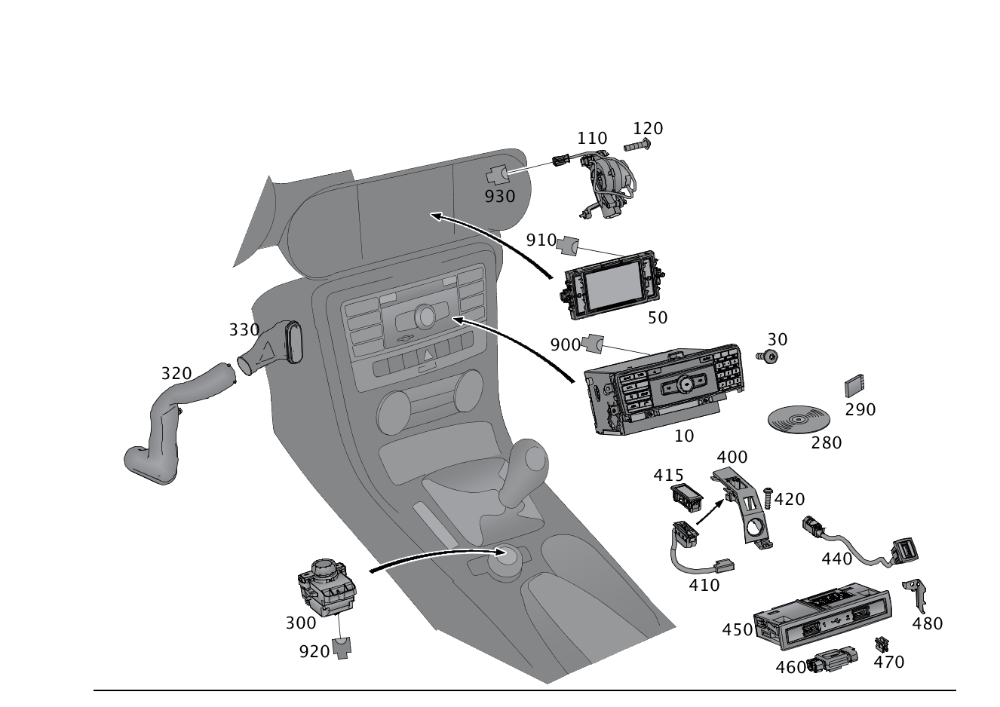

| № | Артикул | Название | Кол. | Примечание | Ограничение |
|---|---|---|---|---|---|
| 10 | A 172 900 61 12 | Блок управления (STEUERGERAET) | 1 | ПАНЕЛЬ УПРАВЛ. [672] ДЕТАЛЬ ПОСЛЕ УСТАН.ПРОВЕРИТЬ НА АКТУАЛЬНОСТЬ "ПРОШИВНОГО" ПО [697] ДЕТАЛЬ ПОСТАВЛЯЕТСЯ ТОЛЬКО/ИЛИ ТАКЖЕ КАК ЗАП.ЧАСТЬ [002833] ПРИ УСТАНОВКЕ НА А/М С КОДОМ 802 ТАКЖЕ ЗАКАЗАТЬ ЖГУТ ЭЛЕКТРОПРОВОДКИ A 204 440 10 52 | 523+(804/805/806) |
| 10 | A 172 900 93 10 | Блок управления (STEUERGERAET) | 1 | ПАНЕЛЬ УПРАВЛ. [672] ДЕТАЛЬ ПОСЛЕ УСТАН.ПРОВЕРИТЬ НА АКТУАЛЬНОСТЬ "ПРОШИВНОГО" ПО [697] ДЕТАЛЬ ПОСТАВЛЯЕТСЯ ТОЛЬКО/ИЛИ ТАКЖЕ КАК ЗАП.ЧАСТЬ | 512+(804/805/806) |
| 10 | A 172 900 68 12 | Блок управления (STEUERGERAET) | 1 | ПАНЕЛЬ УПРАВЛ. [672] ДЕТАЛЬ ПОСЛЕ УСТАН.ПРОВЕРИТЬ НА АКТУАЛЬНОСТЬ "ПРОШИВНОГО" ПО [697] ДЕТАЛЬ ПОСТАВЛЯЕТСЯ ТОЛЬКО/ИЛИ ТАКЖЕ КАК ЗАП.ЧАСТЬ [402] БОЛЬШЕ НЕ ПОСТАВЛЯЕТСЯ | 512+(804/805/806) |
| 10 | A 172 900 14 11 | Блок управления (STEUERGERAET) | 1 | ПАНЕЛЬ УПРАВЛ. [672] ДЕТАЛЬ ПОСЛЕ УСТАН.ПРОВЕРИТЬ НА АКТУАЛЬНОСТЬ "ПРОШИВНОГО" ПО [697] ДЕТАЛЬ ПОСТАВЛЯЕТСЯ ТОЛЬКО/ИЛИ ТАКЖЕ КАК ЗАП.ЧАСТЬ | 512+(460/494)+(804/805/806) |
| 10 | A 172 900 63 12 | Блок управления (STEUERGERAET) | 1 | ПАНЕЛЬ УПРАВЛ. [672] ДЕТАЛЬ ПОСЛЕ УСТАН.ПРОВЕРИТЬ НА АКТУАЛЬНОСТЬ "ПРОШИВНОГО" ПО [697] ДЕТАЛЬ ПОСТАВЛЯЕТСЯ ТОЛЬКО/ИЛИ ТАКЖЕ КАК ЗАП.ЧАСТЬ [402] БОЛЬШЕ НЕ ПОСТАВЛЯЕТСЯ [002833] ПРИ УСТАНОВКЕ НА А/М С КОДОМ 802 ТАКЖЕ ЗАКАЗАТЬ ЖГУТ ЭЛЕКТРОПРОВОДКИ A 204 440 10 52 | 510+(804/805/806) |
| 10 | A 172 900 44 11 | Блок управления (STEUERGERAET) | 1 | ПАНЕЛЬ УПРАВЛ. [672] ДЕТАЛЬ ПОСЛЕ УСТАН.ПРОВЕРИТЬ НА АКТУАЛЬНОСТЬ "ПРОШИВНОГО" ПО [697] ДЕТАЛЬ ПОСТАВЛЯЕТСЯ ТОЛЬКО/ИЛИ ТАКЖЕ КАК ЗАП.ЧАСТЬ [402] БОЛЬШЕ НЕ ПОСТАВЛЯЕТСЯ [002833] ПРИ УСТАНОВКЕ НА А/М С КОДОМ 802 ТАКЖЕ ЗАКАЗАТЬ ЖГУТ ЭЛЕКТРОПРОВОДКИ A 204 440 10 52 | 523+((460/494)/(460/494)+(518/537/810))+(804/805/806) |
| 10 | A 172 900 62 12 | Блок управления (STEUERGERAET) | 1 | ПАНЕЛЬ УПРАВЛ. [672] ДЕТАЛЬ ПОСЛЕ УСТАН.ПРОВЕРИТЬ НА АКТУАЛЬНОСТЬ "ПРОШИВНОГО" ПО [697] ДЕТАЛЬ ПОСТАВЛЯЕТСЯ ТОЛЬКО/ИЛИ ТАКЖЕ КАК ЗАП.ЧАСТЬ [002833] ПРИ УСТАНОВКЕ НА А/М С КОДОМ 802 ТАКЖЕ ЗАКАЗАТЬ ЖГУТ ЭЛЕКТРОПРОВОДКИ A 204 440 10 52 | 523+(518/537/810)+(804/805/806) |
| 10 | A 172 900 45 11 | Блок управления (STEUERGERAET) | 1 | ПАНЕЛЬ УПРАВЛ. [672] ДЕТАЛЬ ПОСЛЕ УСТАН.ПРОВЕРИТЬ НА АКТУАЛЬНОСТЬ "ПРОШИВНОГО" ПО [002833] ПРИ УСТАНОВКЕ НА А/М С КОДОМ 802 ТАКЖЕ ЗАКАЗАТЬ ЖГУТ ЭЛЕКТРОПРОВОДКИ A 204 440 10 52 | (523/523+(518/537/810))+830+(804/805/806) |
| 10 | A 172 900 95 10 | Блок управления (STEUERGERAET) | 1 | ПАНЕЛЬ УПРАВЛ. [672] ДЕТАЛЬ ПОСЛЕ УСТАН.ПРОВЕРИТЬ НА АКТУАЛЬНОСТЬ "ПРОШИВНОГО" ПО | 514+(804/805/806) |
| 10 | A 172 900 11 11 | Блок управления (STEUERGERAET) | 1 | ПАНЕЛЬ УПРАВЛ. [672] ДЕТАЛЬ ПОСЛЕ УСТАН.ПРОВЕРИТЬ НА АКТУАЛЬНОСТЬ "ПРОШИВНОГО" ПО | 527+498+(804/805/806) |
| 10 | A 172 900 92 10 | Блок управления (STEUERGERAET) | 1 | ПАНЕЛЬ УПРАВЛ. [672] ДЕТАЛЬ ПОСЛЕ УСТАН.ПРОВЕРИТЬ НА АКТУАЛЬНОСТЬ "ПРОШИВНОГО" ПО [697] ДЕТАЛЬ ПОСТАВЛЯЕТСЯ ТОЛЬКО/ИЛИ ТАКЖЕ КАК ЗАП.ЧАСТЬ | 527+(804/805/806) |
| 10 | A 172 900 67 12 | Блок управления (STEUERGERAET) | 1 | ПАНЕЛЬ УПРАВЛ. [672] ДЕТАЛЬ ПОСЛЕ УСТАН.ПРОВЕРИТЬ НА АКТУАЛЬНОСТЬ "ПРОШИВНОГО" ПО [697] ДЕТАЛЬ ПОСТАВЛЯЕТСЯ ТОЛЬКО/ИЛИ ТАКЖЕ КАК ЗАП.ЧАСТЬ [402] БОЛЬШЕ НЕ ПОСТАВЛЯЕТСЯ | 527+(804/805/806) |
| 10 | A 172 900 12 11 | Блок управления (STEUERGERAET) | 1 | ПАНЕЛЬ УПРАВЛ. [672] ДЕТАЛЬ ПОСЛЕ УСТАН.ПРОВЕРИТЬ НА АКТУАЛЬНОСТЬ "ПРОШИВНОГО" ПО | 512+835+(804/805/806) |
| 10 | A 172 900 13 11 | Блок управления (STEUERGERAET) | 1 | ПАНЕЛЬ УПРАВЛ. [672] ДЕТАЛЬ ПОСЛЕ УСТАН.ПРОВЕРИТЬ НА АКТУАЛЬНОСТЬ "ПРОШИВНОГО" ПО | 512+829+(804/805/806) |
| 10 | A 172 900 19 12 | Блок управления (STEUERGERAET) | 1 | ПАНЕЛЬ УПРАВЛ. [672] ДЕТАЛЬ ПОСЛЕ УСТАН.ПРОВЕРИТЬ НА АКТУАЛЬНОСТЬ "ПРОШИВНОГО" ПО [697] ДЕТАЛЬ ПОСТАВЛЯЕТСЯ ТОЛЬКО/ИЛИ ТАКЖЕ КАК ЗАП.ЧАСТЬ | 527+(460/494)+(805/806) |
| 10 | A 172 900 49 12 | Блок управления | 1 | ПАНЕЛЬ УПРАВЛ. [426] ДЛЯ ЦИФРОВОГО РУКОВОДСТВА ПО ЭКСПЛУАТАЦИИ ЗАКАЗАТЬ ТАКЖЕ ПРОГРАММНОЕ ОБЕСПЕЧЕНИЕ В КГ 58, TU300 [672] ДЕТАЛЬ ПОСЛЕ УСТАН.ПРОВЕРИТЬ НА АКТУАЛЬНОСТЬ "ПРОШИВНОГО" ПО | 505+818+3U1 |
| 10 | A 172 900 36 13 | Блок управления (STEUERGERAET) | 1 | ПАНЕЛЬ УПРАВЛ. [426] ДЛЯ ЦИФРОВОГО РУКОВОДСТВА ПО ЭКСПЛУАТАЦИИ ЗАКАЗАТЬ ТАКЖЕ ПРОГРАММНОЕ ОБЕСПЕЧЕНИЕ В КГ 58, TU300 [672] ДЕТАЛЬ ПОСЛЕ УСТАН.ПРОВЕРИТЬ НА АКТУАЛЬНОСТЬ "ПРОШИВНОГО" ПО | 505+818+3U1 |
| 10 | A 172 900 50 12 | Блок управления | 1 | ПАНЕЛЬ УПРАВЛ. [426] ДЛЯ ЦИФРОВОГО РУКОВОДСТВА ПО ЭКСПЛУАТАЦИИ ЗАКАЗАТЬ ТАКЖЕ ПРОГРАММНОЕ ОБЕСПЕЧЕНИЕ В КГ 58, TU300 [672] ДЕТАЛЬ ПОСЛЕ УСТАН.ПРОВЕРИТЬ НА АКТУАЛЬНОСТЬ "ПРОШИВНОГО" ПО | 522+818+3U1 |
| 10 | A 172 900 37 13 | Блок управления (STEUERGERAET) | 1 | ПАНЕЛЬ УПРАВЛ. [426] ДЛЯ ЦИФРОВОГО РУКОВОДСТВА ПО ЭКСПЛУАТАЦИИ ЗАКАЗАТЬ ТАКЖЕ ПРОГРАММНОЕ ОБЕСПЕЧЕНИЕ В КГ 58, TU300 [672] ДЕТАЛЬ ПОСЛЕ УСТАН.ПРОВЕРИТЬ НА АКТУАЛЬНОСТЬ "ПРОШИВНОГО" ПО | 522+818+3U1 |
| 10 | A 172 900 51 12 | Блок управления | 1 | ПАНЕЛЬ УПРАВЛ. [426] ДЛЯ ЦИФРОВОГО РУКОВОДСТВА ПО ЭКСПЛУАТАЦИИ ЗАКАЗАТЬ ТАКЖЕ ПРОГРАММНОЕ ОБЕСПЕЧЕНИЕ В КГ 58, TU300 [672] ДЕТАЛЬ ПОСЛЕ УСТАН.ПРОВЕРИТЬ НА АКТУАЛЬНОСТЬ "ПРОШИВНОГО" ПО | 522+818+3U2 |
| 10 | A 172 900 38 13 | Блок управления | 1 | ПАНЕЛЬ УПРАВЛ. [426] ДЛЯ ЦИФРОВОГО РУКОВОДСТВА ПО ЭКСПЛУАТАЦИИ ЗАКАЗАТЬ ТАКЖЕ ПРОГРАММНОЕ ОБЕСПЕЧЕНИЕ В КГ 58, TU300 [672] ДЕТАЛЬ ПОСЛЕ УСТАН.ПРОВЕРИТЬ НА АКТУАЛЬНОСТЬ "ПРОШИВНОГО" ПО | 522+818+3U2 |
| 10 | A 172 900 52 12 | Блок управления | 1 | ПАНЕЛЬ УПРАВЛ. [426] ДЛЯ ЦИФРОВОГО РУКОВОДСТВА ПО ЭКСПЛУАТАЦИИ ЗАКАЗАТЬ ТАКЖЕ ПРОГРАММНОЕ ОБЕСПЕЧЕНИЕ В КГ 58, TU300 [672] ДЕТАЛЬ ПОСЛЕ УСТАН.ПРОВЕРИТЬ НА АКТУАЛЬНОСТЬ "ПРОШИВНОГО" ПО | 531+815+3U1 |
| 10 | A 172 900 31 13 | Блок управления (STEUERGERAET) | 1 | ПАНЕЛЬ УПРАВЛ. [426] ДЛЯ ЦИФРОВОГО РУКОВОДСТВА ПО ЭКСПЛУАТАЦИИ ЗАКАЗАТЬ ТАКЖЕ ПРОГРАММНОЕ ОБЕСПЕЧЕНИЕ В КГ 58, TU300 [672] ДЕТАЛЬ ПОСЛЕ УСТАН.ПРОВЕРИТЬ НА АКТУАЛЬНОСТЬ "ПРОШИВНОГО" ПО [697] ДЕТАЛЬ ПОСТАВЛЯЕТСЯ ТОЛЬКО/ИЛИ ТАКЖЕ КАК ЗАП.ЧАСТЬ | 531+815+3U1 |
| 10 | A 172 900 23 13 | Блок управления (STEUERGERAET) | 1 | ПАНЕЛЬ УПРАВЛ. [426] ДЛЯ ЦИФРОВОГО РУКОВОДСТВА ПО ЭКСПЛУАТАЦИИ ЗАКАЗАТЬ ТАКЖЕ ПРОГРАММНОЕ ОБЕСПЕЧЕНИЕ В КГ 58, TU300 [672] ДЕТАЛЬ ПОСЛЕ УСТАН.ПРОВЕРИТЬ НА АКТУАЛЬНОСТЬ "ПРОШИВНОГО" ПО [697] ДЕТАЛЬ ПОСТАВЛЯЕТСЯ ТОЛЬКО/ИЛИ ТАКЖЕ КАК ЗАП.ЧАСТЬ | 531+815+3U1 |
| 10 | A 172 900 74 13 | Блок управления (STEUERGERAET) | 1 | ПАНЕЛЬ УПРАВЛ. [426] ДЛЯ ЦИФРОВОГО РУКОВОДСТВА ПО ЭКСПЛУАТАЦИИ ЗАКАЗАТЬ ТАКЖЕ ПРОГРАММНОЕ ОБЕСПЕЧЕНИЕ В КГ 58, TU300 [672] ДЕТАЛЬ ПОСЛЕ УСТАН.ПРОВЕРИТЬ НА АКТУАЛЬНОСТЬ "ПРОШИВНОГО" ПО [697] ДЕТАЛЬ ПОСТАВЛЯЕТСЯ ТОЛЬКО/ИЛИ ТАКЖЕ КАК ЗАП.ЧАСТЬ | 531+815+3U1 |
| 10 | A 172 900 42 14 | Блок управления (STEUERGERAET) | 1 | ПАНЕЛЬ УПРАВЛ. [426] ДЛЯ ЦИФРОВОГО РУКОВОДСТВА ПО ЭКСПЛУАТАЦИИ ЗАКАЗАТЬ ТАКЖЕ ПРОГРАММНОЕ ОБЕСПЕЧЕНИЕ В КГ 58, TU300 [672] ДЕТАЛЬ ПОСЛЕ УСТАН.ПРОВЕРИТЬ НА АКТУАЛЬНОСТЬ "ПРОШИВНОГО" ПО [697] ДЕТАЛЬ ПОСТАВЛЯЕТСЯ ТОЛЬКО/ИЛИ ТАКЖЕ КАК ЗАП.ЧАСТЬ | 531+815+3U1 |
| 10 | A 172 900 74 14 | Блок управления (STEUERGERAET) | 1 | ПАНЕЛЬ УПРАВЛ. [426] ДЛЯ ЦИФРОВОГО РУКОВОДСТВА ПО ЭКСПЛУАТАЦИИ ЗАКАЗАТЬ ТАКЖЕ ПРОГРАММНОЕ ОБЕСПЕЧЕНИЕ В КГ 58, TU300 [672] ДЕТАЛЬ ПОСЛЕ УСТАН.ПРОВЕРИТЬ НА АКТУАЛЬНОСТЬ "ПРОШИВНОГО" ПО [697] ДЕТАЛЬ ПОСТАВЛЯЕТСЯ ТОЛЬКО/ИЛИ ТАКЖЕ КАК ЗАП.ЧАСТЬ | 531+815+3U1 |
| 10 | A 172 900 08 14 | Блок управления (STEUERGERAET) | 1 | ПАНЕЛЬ УПРАВЛ. [426] ДЛЯ ЦИФРОВОГО РУКОВОДСТВА ПО ЭКСПЛУАТАЦИИ ЗАКАЗАТЬ ТАКЖЕ ПРОГРАММНОЕ ОБЕСПЕЧЕНИЕ В КГ 58, TU300 [672] ДЕТАЛЬ ПОСЛЕ УСТАН.ПРОВЕРИТЬ НА АКТУАЛЬНОСТЬ "ПРОШИВНОГО" ПО [697] ДЕТАЛЬ ПОСТАВЛЯЕТСЯ ТОЛЬКО/ИЛИ ТАКЖЕ КАК ЗАП.ЧАСТЬ | 531+815+3U1 |
| 10 | A 172 900 53 15 | Блок управления (STEUERGERAET) | 1 | ПАНЕЛЬ УПРАВЛ. [426] ДЛЯ ЦИФРОВОГО РУКОВОДСТВА ПО ЭКСПЛУАТАЦИИ ЗАКАЗАТЬ ТАКЖЕ ПРОГРАММНОЕ ОБЕСПЕЧЕНИЕ В КГ 58, TU300 [672] ДЕТАЛЬ ПОСЛЕ УСТАН.ПРОВЕРИТЬ НА АКТУАЛЬНОСТЬ "ПРОШИВНОГО" ПО [697] ДЕТАЛЬ ПОСТАВЛЯЕТСЯ ТОЛЬКО/ИЛИ ТАКЖЕ КАК ЗАП.ЧАСТЬ | 531+815+3U1 |
| 10 | A 172 900 54 12 | Блок управления | 1 | ПАНЕЛЬ УПРАВЛ. [426] ДЛЯ ЦИФРОВОГО РУКОВОДСТВА ПО ЭКСПЛУАТАЦИИ ЗАКАЗАТЬ ТАКЖЕ ПРОГРАММНОЕ ОБЕСПЕЧЕНИЕ В КГ 58, TU300 [672] ДЕТАЛЬ ПОСЛЕ УСТАН.ПРОВЕРИТЬ НА АКТУАЛЬНОСТЬ "ПРОШИВНОГО" ПО | 531+815+3U2 |
| 10 | A 172 900 33 13 | Блок управления | 1 | ПАНЕЛЬ УПРАВЛ. [426] ДЛЯ ЦИФРОВОГО РУКОВОДСТВА ПО ЭКСПЛУАТАЦИИ ЗАКАЗАТЬ ТАКЖЕ ПРОГРАММНОЕ ОБЕСПЕЧЕНИЕ В КГ 58, TU300 [672] ДЕТАЛЬ ПОСЛЕ УСТАН.ПРОВЕРИТЬ НА АКТУАЛЬНОСТЬ "ПРОШИВНОГО" ПО [697] ДЕТАЛЬ ПОСТАВЛЯЕТСЯ ТОЛЬКО/ИЛИ ТАКЖЕ КАК ЗАП.ЧАСТЬ | 531+815+3U2 |
| 10 | A 172 900 25 13 | Блок управления (STEUERGERAET) | 1 | ПАНЕЛЬ УПРАВЛ. [426] ДЛЯ ЦИФРОВОГО РУКОВОДСТВА ПО ЭКСПЛУАТАЦИИ ЗАКАЗАТЬ ТАКЖЕ ПРОГРАММНОЕ ОБЕСПЕЧЕНИЕ В КГ 58, TU300 [672] ДЕТАЛЬ ПОСЛЕ УСТАН.ПРОВЕРИТЬ НА АКТУАЛЬНОСТЬ "ПРОШИВНОГО" ПО | 531+815+3U2 |
| 10 | A 172 900 76 13 | Блок управления | 1 | ПАНЕЛЬ УПРАВЛ. [426] ДЛЯ ЦИФРОВОГО РУКОВОДСТВА ПО ЭКСПЛУАТАЦИИ ЗАКАЗАТЬ ТАКЖЕ ПРОГРАММНОЕ ОБЕСПЕЧЕНИЕ В КГ 58, TU300 [672] ДЕТАЛЬ ПОСЛЕ УСТАН.ПРОВЕРИТЬ НА АКТУАЛЬНОСТЬ "ПРОШИВНОГО" ПО | 531+815+3U2 |
| 10 | A 172 900 44 14 | Блок управления (STEUERGERAET) | 1 | ПАНЕЛЬ УПРАВЛ. [426] ДЛЯ ЦИФРОВОГО РУКОВОДСТВА ПО ЭКСПЛУАТАЦИИ ЗАКАЗАТЬ ТАКЖЕ ПРОГРАММНОЕ ОБЕСПЕЧЕНИЕ В КГ 58, TU300 [672] ДЕТАЛЬ ПОСЛЕ УСТАН.ПРОВЕРИТЬ НА АКТУАЛЬНОСТЬ "ПРОШИВНОГО" ПО | 531+815+3U2 |
| 10 | A 172 900 76 14 | Блок управления (STEUERGERAET) | 1 | ПАНЕЛЬ УПРАВЛ. [426] ДЛЯ ЦИФРОВОГО РУКОВОДСТВА ПО ЭКСПЛУАТАЦИИ ЗАКАЗАТЬ ТАКЖЕ ПРОГРАММНОЕ ОБЕСПЕЧЕНИЕ В КГ 58, TU300 [672] ДЕТАЛЬ ПОСЛЕ УСТАН.ПРОВЕРИТЬ НА АКТУАЛЬНОСТЬ "ПРОШИВНОГО" ПО | 531+815+3U2 |
| 10 | A 172 900 10 14 | Блок управления (STEUERGERAET) | 1 | ПАНЕЛЬ УПРАВЛ. [426] ДЛЯ ЦИФРОВОГО РУКОВОДСТВА ПО ЭКСПЛУАТАЦИИ ЗАКАЗАТЬ ТАКЖЕ ПРОГРАММНОЕ ОБЕСПЕЧЕНИЕ В КГ 58, TU300 [672] ДЕТАЛЬ ПОСЛЕ УСТАН.ПРОВЕРИТЬ НА АКТУАЛЬНОСТЬ "ПРОШИВНОГО" ПО | 531+815+3U2 |
| 10 | A 172 900 55 15 | Блок управления (STEUERGERAET) | 1 | ПАНЕЛЬ УПРАВЛ. [672] ДЕТАЛЬ ПОСЛЕ УСТАН.ПРОВЕРИТЬ НА АКТУАЛЬНОСТЬ "ПРОШИВНОГО" ПО | 531+815+3U2 |
| 10 | A 172 900 55 12 | Блок управления | 1 | ПАНЕЛЬ УПРАВЛ. [426] ДЛЯ ЦИФРОВОГО РУКОВОДСТВА ПО ЭКСПЛУАТАЦИИ ЗАКАЗАТЬ ТАКЖЕ ПРОГРАММНОЕ ОБЕСПЕЧЕНИЕ В КГ 58, TU300 [672] ДЕТАЛЬ ПОСЛЕ УСТАН.ПРОВЕРИТЬ НА АКТУАЛЬНОСТЬ "ПРОШИВНОГО" ПО | 531+815+3U3 |
| 10 | A 172 900 34 13 | Блок управления | 1 | ПАНЕЛЬ УПРАВЛ. [426] ДЛЯ ЦИФРОВОГО РУКОВОДСТВА ПО ЭКСПЛУАТАЦИИ ЗАКАЗАТЬ ТАКЖЕ ПРОГРАММНОЕ ОБЕСПЕЧЕНИЕ В КГ 58, TU300 [672] ДЕТАЛЬ ПОСЛЕ УСТАН.ПРОВЕРИТЬ НА АКТУАЛЬНОСТЬ "ПРОШИВНОГО" ПО | 531+815+3U3 |
| 10 | A 172 900 26 13 | Блок управления (STEUERGERAET) | 1 | ПАНЕЛЬ УПРАВЛ. [426] ДЛЯ ЦИФРОВОГО РУКОВОДСТВА ПО ЭКСПЛУАТАЦИИ ЗАКАЗАТЬ ТАКЖЕ ПРОГРАММНОЕ ОБЕСПЕЧЕНИЕ В КГ 58, TU300 [672] ДЕТАЛЬ ПОСЛЕ УСТАН.ПРОВЕРИТЬ НА АКТУАЛЬНОСТЬ "ПРОШИВНОГО" ПО | 531+815+3U3 |
| 10 | A 172 900 77 13 | Блок управления | 1 | ПАНЕЛЬ УПРАВЛ. [426] ДЛЯ ЦИФРОВОГО РУКОВОДСТВА ПО ЭКСПЛУАТАЦИИ ЗАКАЗАТЬ ТАКЖЕ ПРОГРАММНОЕ ОБЕСПЕЧЕНИЕ В КГ 58, TU300 [672] ДЕТАЛЬ ПОСЛЕ УСТАН.ПРОВЕРИТЬ НА АКТУАЛЬНОСТЬ "ПРОШИВНОГО" ПО | 531+815+3U3 |
| 10 | A 172 900 45 14 | Блок управления | 1 | ПАНЕЛЬ УПРАВЛ. [426] ДЛЯ ЦИФРОВОГО РУКОВОДСТВА ПО ЭКСПЛУАТАЦИИ ЗАКАЗАТЬ ТАКЖЕ ПРОГРАММНОЕ ОБЕСПЕЧЕНИЕ В КГ 58, TU300 [672] ДЕТАЛЬ ПОСЛЕ УСТАН.ПРОВЕРИТЬ НА АКТУАЛЬНОСТЬ "ПРОШИВНОГО" ПО | 531+815+3U3 |
| 10 | A 172 900 77 14 | Блок управления (STEUERGERAET) | 1 | ПАНЕЛЬ УПРАВЛ. [426] ДЛЯ ЦИФРОВОГО РУКОВОДСТВА ПО ЭКСПЛУАТАЦИИ ЗАКАЗАТЬ ТАКЖЕ ПРОГРАММНОЕ ОБЕСПЕЧЕНИЕ В КГ 58, TU300 [672] ДЕТАЛЬ ПОСЛЕ УСТАН.ПРОВЕРИТЬ НА АКТУАЛЬНОСТЬ "ПРОШИВНОГО" ПО | 531+815+3U3 |
| 10 | A 172 900 11 14 | Блок управления (STEUERGERAET) | 1 | ПАНЕЛЬ УПРАВЛ. [426] ДЛЯ ЦИФРОВОГО РУКОВОДСТВА ПО ЭКСПЛУАТАЦИИ ЗАКАЗАТЬ ТАКЖЕ ПРОГРАММНОЕ ОБЕСПЕЧЕНИЕ В КГ 58, TU300 [672] ДЕТАЛЬ ПОСЛЕ УСТАН.ПРОВЕРИТЬ НА АКТУАЛЬНОСТЬ "ПРОШИВНОГО" ПО | 531+815+3U3 |
| 10 | A 172 900 56 15 | Блок управления (STEUERGERAET) | 1 | ПАНЕЛЬ УПРАВЛ. [426] ДЛЯ ЦИФРОВОГО РУКОВОДСТВА ПО ЭКСПЛУАТАЦИИ ЗАКАЗАТЬ ТАКЖЕ ПРОГРАММНОЕ ОБЕСПЕЧЕНИЕ В КГ 58, TU300 [672] ДЕТАЛЬ ПОСЛЕ УСТАН.ПРОВЕРИТЬ НА АКТУАЛЬНОСТЬ "ПРОШИВНОГО" ПО | 531+815+3U3 |
| 10 | A 172 900 04 16 | Блок управления (STEUERGERAET) | 1 | ПАНЕЛЬ УПРАВЛ. [426] ДЛЯ ЦИФРОВОГО РУКОВОДСТВА ПО ЭКСПЛУАТАЦИИ ЗАКАЗАТЬ ТАКЖЕ ПРОГРАММНОЕ ОБЕСПЕЧЕНИЕ В КГ 58, TU300 [672] ДЕТАЛЬ ПОСЛЕ УСТАН.ПРОВЕРИТЬ НА АКТУАЛЬНОСТЬ "ПРОШИВНОГО" ПО | 531+815+3U3 |
| 10 | A 172 900 53 12 | Блок управления | 1 | ПАНЕЛЬ УПРАВЛ. [426] ДЛЯ ЦИФРОВОГО РУКОВОДСТВА ПО ЭКСПЛУАТАЦИИ ЗАКАЗАТЬ ТАКЖЕ ПРОГРАММНОЕ ОБЕСПЕЧЕНИЕ В КГ 58, TU300 [672] ДЕТАЛЬ ПОСЛЕ УСТАН.ПРОВЕРИТЬ НА АКТУАЛЬНОСТЬ "ПРОШИВНОГО" ПО | 531+814+3U1 |
| 10 | A 172 900 32 13 | Блок управления (STEUERGERAET) | 1 | ПАНЕЛЬ УПРАВЛ. [426] ДЛЯ ЦИФРОВОГО РУКОВОДСТВА ПО ЭКСПЛУАТАЦИИ ЗАКАЗАТЬ ТАКЖЕ ПРОГРАММНОЕ ОБЕСПЕЧЕНИЕ В КГ 58, TU300 [672] ДЕТАЛЬ ПОСЛЕ УСТАН.ПРОВЕРИТЬ НА АКТУАЛЬНОСТЬ "ПРОШИВНОГО" ПО | 531+814+3U1 |
| 10 | A 172 900 24 13 | Блок управления | 1 | ПАНЕЛЬ УПРАВЛ. [426] ДЛЯ ЦИФРОВОГО РУКОВОДСТВА ПО ЭКСПЛУАТАЦИИ ЗАКАЗАТЬ ТАКЖЕ ПРОГРАММНОЕ ОБЕСПЕЧЕНИЕ В КГ 58, TU300 [672] ДЕТАЛЬ ПОСЛЕ УСТАН.ПРОВЕРИТЬ НА АКТУАЛЬНОСТЬ "ПРОШИВНОГО" ПО | 531+814+3U1 |
| 10 | A 172 900 75 13 | Блок управления | 1 | ПАНЕЛЬ УПРАВЛ. [426] ДЛЯ ЦИФРОВОГО РУКОВОДСТВА ПО ЭКСПЛУАТАЦИИ ЗАКАЗАТЬ ТАКЖЕ ПРОГРАММНОЕ ОБЕСПЕЧЕНИЕ В КГ 58, TU300 [672] ДЕТАЛЬ ПОСЛЕ УСТАН.ПРОВЕРИТЬ НА АКТУАЛЬНОСТЬ "ПРОШИВНОГО" ПО | 531+814+3U1 |
| 10 | A 172 900 43 14 | Блок управления | 1 | ПАНЕЛЬ УПРАВЛ. [426] ДЛЯ ЦИФРОВОГО РУКОВОДСТВА ПО ЭКСПЛУАТАЦИИ ЗАКАЗАТЬ ТАКЖЕ ПРОГРАММНОЕ ОБЕСПЕЧЕНИЕ В КГ 58, TU300 [672] ДЕТАЛЬ ПОСЛЕ УСТАН.ПРОВЕРИТЬ НА АКТУАЛЬНОСТЬ "ПРОШИВНОГО" ПО | 531+814+3U1 |
| 10 | A 172 900 75 14 | Блок управления | 1 | ПАНЕЛЬ УПРАВЛ. [426] ДЛЯ ЦИФРОВОГО РУКОВОДСТВА ПО ЭКСПЛУАТАЦИИ ЗАКАЗАТЬ ТАКЖЕ ПРОГРАММНОЕ ОБЕСПЕЧЕНИЕ В КГ 58, TU300 [672] ДЕТАЛЬ ПОСЛЕ УСТАН.ПРОВЕРИТЬ НА АКТУАЛЬНОСТЬ "ПРОШИВНОГО" ПО | 531+814+3U1 |
| 10 | A 172 900 09 14 | Блок управления (STEUERGERAET) | 1 | ПАНЕЛЬ УПРАВЛ. [426] ДЛЯ ЦИФРОВОГО РУКОВОДСТВА ПО ЭКСПЛУАТАЦИИ ЗАКАЗАТЬ ТАКЖЕ ПРОГРАММНОЕ ОБЕСПЕЧЕНИЕ В КГ 58, TU300 [672] ДЕТАЛЬ ПОСЛЕ УСТАН.ПРОВЕРИТЬ НА АКТУАЛЬНОСТЬ "ПРОШИВНОГО" ПО | 531+814+3U1 |
| 10 | A 172 900 54 15 | Блок управления (STEUERGERAET) | 1 | ПАНЕЛЬ УПРАВЛ. [426] ДЛЯ ЦИФРОВОГО РУКОВОДСТВА ПО ЭКСПЛУАТАЦИИ ЗАКАЗАТЬ ТАКЖЕ ПРОГРАММНОЕ ОБЕСПЕЧЕНИЕ В КГ 58, TU300 [672] ДЕТАЛЬ ПОСЛЕ УСТАН.ПРОВЕРИТЬ НА АКТУАЛЬНОСТЬ "ПРОШИВНОГО" ПО [697] ДЕТАЛЬ ПОСТАВЛЯЕТСЯ ТОЛЬКО/ИЛИ ТАКЖЕ КАК ЗАП.ЧАСТЬ | 531+814+3U1 |
| 10 | A 172 900 56 12 | Блок управления | 1 | ПАНЕЛЬ УПРАВЛ. [426] ДЛЯ ЦИФРОВОГО РУКОВОДСТВА ПО ЭКСПЛУАТАЦИИ ЗАКАЗАТЬ ТАКЖЕ ПРОГРАММНОЕ ОБЕСПЕЧЕНИЕ В КГ 58, TU300 [672] ДЕТАЛЬ ПОСЛЕ УСТАН.ПРОВЕРИТЬ НА АКТУАЛЬНОСТЬ "ПРОШИВНОГО" ПО | 531+814+3U4 |
| 10 | A 172 900 35 13 | Блок управления | 1 | ПАНЕЛЬ УПРАВЛ. [426] ДЛЯ ЦИФРОВОГО РУКОВОДСТВА ПО ЭКСПЛУАТАЦИИ ЗАКАЗАТЬ ТАКЖЕ ПРОГРАММНОЕ ОБЕСПЕЧЕНИЕ В КГ 58, TU300 [672] ДЕТАЛЬ ПОСЛЕ УСТАН.ПРОВЕРИТЬ НА АКТУАЛЬНОСТЬ "ПРОШИВНОГО" ПО | 531+814+3U4 |
| 10 | A 172 900 27 13 | Блок управления (STEUERGERAET) | 1 | ПАНЕЛЬ УПРАВЛ. [426] ДЛЯ ЦИФРОВОГО РУКОВОДСТВА ПО ЭКСПЛУАТАЦИИ ЗАКАЗАТЬ ТАКЖЕ ПРОГРАММНОЕ ОБЕСПЕЧЕНИЕ В КГ 58, TU300 [672] ДЕТАЛЬ ПОСЛЕ УСТАН.ПРОВЕРИТЬ НА АКТУАЛЬНОСТЬ "ПРОШИВНОГО" ПО | 531+814+3U4 |
| 10 | A 172 900 78 13 | Блок управления | 1 | ПАНЕЛЬ УПРАВЛ. [426] ДЛЯ ЦИФРОВОГО РУКОВОДСТВА ПО ЭКСПЛУАТАЦИИ ЗАКАЗАТЬ ТАКЖЕ ПРОГРАММНОЕ ОБЕСПЕЧЕНИЕ В КГ 58, TU300 [672] ДЕТАЛЬ ПОСЛЕ УСТАН.ПРОВЕРИТЬ НА АКТУАЛЬНОСТЬ "ПРОШИВНОГО" ПО | 531+814+3U4 |
| 10 | A 172 900 46 14 | Блок управления | 1 | ПАНЕЛЬ УПРАВЛ. [426] ДЛЯ ЦИФРОВОГО РУКОВОДСТВА ПО ЭКСПЛУАТАЦИИ ЗАКАЗАТЬ ТАКЖЕ ПРОГРАММНОЕ ОБЕСПЕЧЕНИЕ В КГ 58, TU300 [672] ДЕТАЛЬ ПОСЛЕ УСТАН.ПРОВЕРИТЬ НА АКТУАЛЬНОСТЬ "ПРОШИВНОГО" ПО | 531+814+3U4 |
| 10 | A 172 900 78 14 | Блок управления (STEUERGERAET) | 1 | ПАНЕЛЬ УПРАВЛ. [426] ДЛЯ ЦИФРОВОГО РУКОВОДСТВА ПО ЭКСПЛУАТАЦИИ ЗАКАЗАТЬ ТАКЖЕ ПРОГРАММНОЕ ОБЕСПЕЧЕНИЕ В КГ 58, TU300 [672] ДЕТАЛЬ ПОСЛЕ УСТАН.ПРОВЕРИТЬ НА АКТУАЛЬНОСТЬ "ПРОШИВНОГО" ПО | 531+814+3U4 |
| 10 | A 172 900 12 14 | Блок управления (STEUERGERAET) | 1 | ПАНЕЛЬ УПРАВЛ. [426] ДЛЯ ЦИФРОВОГО РУКОВОДСТВА ПО ЭКСПЛУАТАЦИИ ЗАКАЗАТЬ ТАКЖЕ ПРОГРАММНОЕ ОБЕСПЕЧЕНИЕ В КГ 58, TU300 [672] ДЕТАЛЬ ПОСЛЕ УСТАН.ПРОВЕРИТЬ НА АКТУАЛЬНОСТЬ "ПРОШИВНОГО" ПО | 531+814+3U4 |
| 10 | A 172 900 57 15 | Блок управления (STEUERGERAET) | 1 | ПАНЕЛЬ УПРАВЛ. [426] ДЛЯ ЦИФРОВОГО РУКОВОДСТВА ПО ЭКСПЛУАТАЦИИ ЗАКАЗАТЬ ТАКЖЕ ПРОГРАММНОЕ ОБЕСПЕЧЕНИЕ В КГ 58, TU300 [672] ДЕТАЛЬ ПОСЛЕ УСТАН.ПРОВЕРИТЬ НА АКТУАЛЬНОСТЬ "ПРОШИВНОГО" ПО | 531+814+3U4 |
| 10 | A 172 900 64 15 | Блок управления (STEUERGERAET) | 1 | ПАНЕЛЬ УПРАВЛ. [426] ДЛЯ ЦИФРОВОГО РУКОВОДСТВА ПО ЭКСПЛУАТАЦИИ ЗАКАЗАТЬ ТАКЖЕ ПРОГРАММНОЕ ОБЕСПЕЧЕНИЕ В КГ 58, TU300 [672] ДЕТАЛЬ ПОСЛЕ УСТАН.ПРОВЕРИТЬ НА АКТУАЛЬНОСТЬ "ПРОШИВНОГО" ПО | 531+814+3U4 |
| 10 | A 172 900 60 13 | Блок управления (STEUERGERAET) | 1 | ПАНЕЛЬ УПРАВЛ. [426] ДЛЯ ЦИФРОВОГО РУКОВОДСТВА ПО ЭКСПЛУАТАЦИИ ЗАКАЗАТЬ ТАКЖЕ ПРОГРАММНОЕ ОБЕСПЕЧЕНИЕ В КГ 58, TU300 [672] ДЕТАЛЬ ПОСЛЕ УСТАН.ПРОВЕРИТЬ НА АКТУАЛЬНОСТЬ "ПРОШИВНОГО" ПО | 505+818+3U1 |
| 10 | A 172 900 20 13 | Блок управления (STEUERGERAET) | 1 | ПАНЕЛЬ УПРАВЛ. [426] ДЛЯ ЦИФРОВОГО РУКОВОДСТВА ПО ЭКСПЛУАТАЦИИ ЗАКАЗАТЬ ТАКЖЕ ПРОГРАММНОЕ ОБЕСПЕЧЕНИЕ В КГ 58, TU300 [672] ДЕТАЛЬ ПОСЛЕ УСТАН.ПРОВЕРИТЬ НА АКТУАЛЬНОСТЬ "ПРОШИВНОГО" ПО | 505+818+3U1 |
| 10 | A 172 900 83 13 | Блок управления (STEUERGERAET) | 1 | ПАНЕЛЬ УПРАВЛ. [426] ДЛЯ ЦИФРОВОГО РУКОВОДСТВА ПО ЭКСПЛУАТАЦИИ ЗАКАЗАТЬ ТАКЖЕ ПРОГРАММНОЕ ОБЕСПЕЧЕНИЕ В КГ 58, TU300 [672] ДЕТАЛЬ ПОСЛЕ УСТАН.ПРОВЕРИТЬ НА АКТУАЛЬНОСТЬ "ПРОШИВНОГО" ПО | 505+818+3U1 |
| 10 | A 172 900 59 14 | Блок управления (STEUERGERAET) | 1 | ПАНЕЛЬ УПРАВЛ. [426] ДЛЯ ЦИФРОВОГО РУКОВОДСТВА ПО ЭКСПЛУАТАЦИИ ЗАКАЗАТЬ ТАКЖЕ ПРОГРАММНОЕ ОБЕСПЕЧЕНИЕ В КГ 58, TU300 [672] ДЕТАЛЬ ПОСЛЕ УСТАН.ПРОВЕРИТЬ НА АКТУАЛЬНОСТЬ "ПРОШИВНОГО" ПО [697] ДЕТАЛЬ ПОСТАВЛЯЕТСЯ ТОЛЬКО/ИЛИ ТАКЖЕ КАК ЗАП.ЧАСТЬ | 505+818+3U1 |
| 10 | A 172 900 61 13 | Блок управления (STEUERGERAET) | 1 | ПАНЕЛЬ УПРАВЛ. [426] ДЛЯ ЦИФРОВОГО РУКОВОДСТВА ПО ЭКСПЛУАТАЦИИ ЗАКАЗАТЬ ТАКЖЕ ПРОГРАММНОЕ ОБЕСПЕЧЕНИЕ В КГ 58, TU300 [672] ДЕТАЛЬ ПОСЛЕ УСТАН.ПРОВЕРИТЬ НА АКТУАЛЬНОСТЬ "ПРОШИВНОГО" ПО | 522+818+3U1 |
| 10 | A 172 900 21 13 | Блок управления (STEUERGERAET) | 1 | ПАНЕЛЬ УПРАВЛ. [426] ДЛЯ ЦИФРОВОГО РУКОВОДСТВА ПО ЭКСПЛУАТАЦИИ ЗАКАЗАТЬ ТАКЖЕ ПРОГРАММНОЕ ОБЕСПЕЧЕНИЕ В КГ 58, TU300 [672] ДЕТАЛЬ ПОСЛЕ УСТАН.ПРОВЕРИТЬ НА АКТУАЛЬНОСТЬ "ПРОШИВНОГО" ПО | 522+818+3U1 |
| 10 | A 172 900 84 13 | Блок управления (STEUERGERAET) | 1 | ПАНЕЛЬ УПРАВЛ. [426] ДЛЯ ЦИФРОВОГО РУКОВОДСТВА ПО ЭКСПЛУАТАЦИИ ЗАКАЗАТЬ ТАКЖЕ ПРОГРАММНОЕ ОБЕСПЕЧЕНИЕ В КГ 58, TU300 [672] ДЕТАЛЬ ПОСЛЕ УСТАН.ПРОВЕРИТЬ НА АКТУАЛЬНОСТЬ "ПРОШИВНОГО" ПО | 522+818+3U1 |
| 10 | A 172 900 60 14 | Блок управления (STEUERGERAET) | 1 | ПАНЕЛЬ УПРАВЛ. [426] ДЛЯ ЦИФРОВОГО РУКОВОДСТВА ПО ЭКСПЛУАТАЦИИ ЗАКАЗАТЬ ТАКЖЕ ПРОГРАММНОЕ ОБЕСПЕЧЕНИЕ В КГ 58, TU300 [672] ДЕТАЛЬ ПОСЛЕ УСТАН.ПРОВЕРИТЬ НА АКТУАЛЬНОСТЬ "ПРОШИВНОГО" ПО | 522+818+3U1 |
| 10 | A 172 900 62 13 | Блок управления (STEUERGERAET) | 1 | ПАНЕЛЬ УПРАВЛ. [426] ДЛЯ ЦИФРОВОГО РУКОВОДСТВА ПО ЭКСПЛУАТАЦИИ ЗАКАЗАТЬ ТАКЖЕ ПРОГРАММНОЕ ОБЕСПЕЧЕНИЕ В КГ 58, TU300 [672] ДЕТАЛЬ ПОСЛЕ УСТАН.ПРОВЕРИТЬ НА АКТУАЛЬНОСТЬ "ПРОШИВНОГО" ПО | 522+818+3U2 |
| 10 | A 172 900 22 13 | Блок управления (STEUERGERAET) | 1 | ПАНЕЛЬ УПРАВЛ. [426] ДЛЯ ЦИФРОВОГО РУКОВОДСТВА ПО ЭКСПЛУАТАЦИИ ЗАКАЗАТЬ ТАКЖЕ ПРОГРАММНОЕ ОБЕСПЕЧЕНИЕ В КГ 58, TU300 [672] ДЕТАЛЬ ПОСЛЕ УСТАН.ПРОВЕРИТЬ НА АКТУАЛЬНОСТЬ "ПРОШИВНОГО" ПО | 522+818+3U2 |
| 10 | A 172 900 85 13 | Блок управления (STEUERGERAET) | 1 | ПАНЕЛЬ УПРАВЛ. [426] ДЛЯ ЦИФРОВОГО РУКОВОДСТВА ПО ЭКСПЛУАТАЦИИ ЗАКАЗАТЬ ТАКЖЕ ПРОГРАММНОЕ ОБЕСПЕЧЕНИЕ В КГ 58, TU300 [672] ДЕТАЛЬ ПОСЛЕ УСТАН.ПРОВЕРИТЬ НА АКТУАЛЬНОСТЬ "ПРОШИВНОГО" ПО | 522+818+3U2 |
| 10 | A 172 900 61 14 | Блок управления | 1 | ПАНЕЛЬ УПРАВЛ. [426] ДЛЯ ЦИФРОВОГО РУКОВОДСТВА ПО ЭКСПЛУАТАЦИИ ЗАКАЗАТЬ ТАКЖЕ ПРОГРАММНОЕ ОБЕСПЕЧЕНИЕ В КГ 58, TU300 [672] ДЕТАЛЬ ПОСЛЕ УСТАН.ПРОВЕРИТЬ НА АКТУАЛЬНОСТЬ "ПРОШИВНОГО" ПО | 522+818+3U2 |
| 10 | A 172 900 71 13 | Блок управления (STEUERGERAET) | 1 | ПАНЕЛЬ УПРАВЛ. [426] ДЛЯ ЦИФРОВОГО РУКОВОДСТВА ПО ЭКСПЛУАТАЦИИ ЗАКАЗАТЬ ТАКЖЕ ПРОГРАММНОЕ ОБЕСПЕЧЕНИЕ В КГ 58, TU300 [672] ДЕТАЛЬ ПОСЛЕ УСТАН.ПРОВЕРИТЬ НА АКТУАЛЬНОСТЬ "ПРОШИВНОГО" ПО | 807+522+818+3U1+830 |
| 10 | A 172 900 62 14 | Блок управления (STEUERGERAET) | 1 | ПАНЕЛЬ УПРАВЛ. [426] ДЛЯ ЦИФРОВОГО РУКОВОДСТВА ПО ЭКСПЛУАТАЦИИ ЗАКАЗАТЬ ТАКЖЕ ПРОГРАММНОЕ ОБЕСПЕЧЕНИЕ В КГ 58, TU300 [672] ДЕТАЛЬ ПОСЛЕ УСТАН.ПРОВЕРИТЬ НА АКТУАЛЬНОСТЬ "ПРОШИВНОГО" ПО | (808/809/800/801)+505+818+3U1 |
| 10 | A 172 900 65 14 | Блок управления (STEUERGERAET) | 1 | ПАНЕЛЬ УПРАВЛ. [426] ДЛЯ ЦИФРОВОГО РУКОВОДСТВА ПО ЭКСПЛУАТАЦИИ ЗАКАЗАТЬ ТАКЖЕ ПРОГРАММНОЕ ОБЕСПЕЧЕНИЕ В КГ 58, TU300 [672] ДЕТАЛЬ ПОСЛЕ УСТАН.ПРОВЕРИТЬ НА АКТУАЛЬНОСТЬ "ПРОШИВНОГО" ПО | (808/809/800/801)+505+818+3U1 |
| 10 | A 172 900 03 15 | Блок управления (STEUERGERAET) | 1 | ПАНЕЛЬ УПРАВЛ. [426] ДЛЯ ЦИФРОВОГО РУКОВОДСТВА ПО ЭКСПЛУАТАЦИИ ЗАКАЗАТЬ ТАКЖЕ ПРОГРАММНОЕ ОБЕСПЕЧЕНИЕ В КГ 58, TU300 [672] ДЕТАЛЬ ПОСЛЕ УСТАН.ПРОВЕРИТЬ НА АКТУАЛЬНОСТЬ "ПРОШИВНОГО" ПО | (808/809/800/801)+505+818+3U1 |
| 10 | A 172 900 06 15 | Блок управления (STEUERGERAET) | 1 | ПАНЕЛЬ УПРАВЛ. [426] ДЛЯ ЦИФРОВОГО РУКОВОДСТВА ПО ЭКСПЛУАТАЦИИ ЗАКАЗАТЬ ТАКЖЕ ПРОГРАММНОЕ ОБЕСПЕЧЕНИЕ В КГ 58, TU300 [672] ДЕТАЛЬ ПОСЛЕ УСТАН.ПРОВЕРИТЬ НА АКТУАЛЬНОСТЬ "ПРОШИВНОГО" ПО | (808/809/800/801)+505+818+3U1 |
| 10 | A 172 900 58 15 | Блок управления (STEUERGERAET) | 1 | ПАНЕЛЬ УПРАВЛ. [426] ДЛЯ ЦИФРОВОГО РУКОВОДСТВА ПО ЭКСПЛУАТАЦИИ ЗАКАЗАТЬ ТАКЖЕ ПРОГРАММНОЕ ОБЕСПЕЧЕНИЕ В КГ 58, TU300 [672] ДЕТАЛЬ ПОСЛЕ УСТАН.ПРОВЕРИТЬ НА АКТУАЛЬНОСТЬ "ПРОШИВНОГО" ПО [697] ДЕТАЛЬ ПОСТАВЛЯЕТСЯ ТОЛЬКО/ИЛИ ТАКЖЕ КАК ЗАП.ЧАСТЬ | (808/809/800/801)+505+818+3U1 |
| 10 | A 172 900 64 14 | Блок управления | 1 | ПАНЕЛЬ УПРАВЛ. [426] ДЛЯ ЦИФРОВОГО РУКОВОДСТВА ПО ЭКСПЛУАТАЦИИ ЗАКАЗАТЬ ТАКЖЕ ПРОГРАММНОЕ ОБЕСПЕЧЕНИЕ В КГ 58, TU300 [672] ДЕТАЛЬ ПОСЛЕ УСТАН.ПРОВЕРИТЬ НА АКТУАЛЬНОСТЬ "ПРОШИВНОГО" ПО | (808/809/800/801)+522+818+3U2 |
| 10 | A 172 900 67 14 | Блок управления (STEUERGERAET) | 1 | ПАНЕЛЬ УПРАВЛ. [426] ДЛЯ ЦИФРОВОГО РУКОВОДСТВА ПО ЭКСПЛУАТАЦИИ ЗАКАЗАТЬ ТАКЖЕ ПРОГРАММНОЕ ОБЕСПЕЧЕНИЕ В КГ 58, TU300 [672] ДЕТАЛЬ ПОСЛЕ УСТАН.ПРОВЕРИТЬ НА АКТУАЛЬНОСТЬ "ПРОШИВНОГО" ПО | (808/809/800/801)+522+818+3U2 |
| 10 | A 172 900 05 15 | Блок управления (STEUERGERAET) | 1 | ПАНЕЛЬ УПРАВЛ. [426] ДЛЯ ЦИФРОВОГО РУКОВОДСТВА ПО ЭКСПЛУАТАЦИИ ЗАКАЗАТЬ ТАКЖЕ ПРОГРАММНОЕ ОБЕСПЕЧЕНИЕ В КГ 58, TU300 [672] ДЕТАЛЬ ПОСЛЕ УСТАН.ПРОВЕРИТЬ НА АКТУАЛЬНОСТЬ "ПРОШИВНОГО" ПО [697] ДЕТАЛЬ ПОСТАВЛЯЕТСЯ ТОЛЬКО/ИЛИ ТАКЖЕ КАК ЗАП.ЧАСТЬ | (808/809/800/801)+522+818+3U2 |
| 10 | A 172 900 08 15 | Блок управления (STEUERGERAET) | 1 | ПАНЕЛЬ УПРАВЛ. [426] ДЛЯ ЦИФРОВОГО РУКОВОДСТВА ПО ЭКСПЛУАТАЦИИ ЗАКАЗАТЬ ТАКЖЕ ПРОГРАММНОЕ ОБЕСПЕЧЕНИЕ В КГ 58, TU300 [672] ДЕТАЛЬ ПОСЛЕ УСТАН.ПРОВЕРИТЬ НА АКТУАЛЬНОСТЬ "ПРОШИВНОГО" ПО | (808/809/800/801)+522+818+3U2 |
| 10 | A 172 900 60 15 | Блок управления (STEUERGERAET) | 1 | ПАНЕЛЬ УПРАВЛ. [426] ДЛЯ ЦИФРОВОГО РУКОВОДСТВА ПО ЭКСПЛУАТАЦИИ ЗАКАЗАТЬ ТАКЖЕ ПРОГРАММНОЕ ОБЕСПЕЧЕНИЕ В КГ 58, TU300 [672] ДЕТАЛЬ ПОСЛЕ УСТАН.ПРОВЕРИТЬ НА АКТУАЛЬНОСТЬ "ПРОШИВНОГО" ПО | (808/809/800/801)+522+818+3U2 |
| 10 | A 172 900 86 15 | Блок управления (STEUERGERAET) | 1 | ПАНЕЛЬ УПРАВЛ. [426] ДЛЯ ЦИФРОВОГО РУКОВОДСТВА ПО ЭКСПЛУАТАЦИИ ЗАКАЗАТЬ ТАКЖЕ ПРОГРАММНОЕ ОБЕСПЕЧЕНИЕ В КГ 58, TU300 [672] ДЕТАЛЬ ПОСЛЕ УСТАН.ПРОВЕРИТЬ НА АКТУАЛЬНОСТЬ "ПРОШИВНОГО" ПО [697] ДЕТАЛЬ ПОСТАВЛЯЕТСЯ ТОЛЬКО/ИЛИ ТАКЖЕ КАК ЗАП.ЧАСТЬ | (808/809/800/801)+522+818+3U2 |
| 10 | A 172 900 63 14 | Блок управления (STEUERGERAET) | 1 | ПАНЕЛЬ УПРАВЛ. [426] ДЛЯ ЦИФРОВОГО РУКОВОДСТВА ПО ЭКСПЛУАТАЦИИ ЗАКАЗАТЬ ТАКЖЕ ПРОГРАММНОЕ ОБЕСПЕЧЕНИЕ В КГ 58, TU300 [672] ДЕТАЛЬ ПОСЛЕ УСТАН.ПРОВЕРИТЬ НА АКТУАЛЬНОСТЬ "ПРОШИВНОГО" ПО | (808/809/800/801)+522+818+3U1 |
| 10 | A 172 900 66 14 | Блок управления (STEUERGERAET) | 1 | ПАНЕЛЬ УПРАВЛ. [426] ДЛЯ ЦИФРОВОГО РУКОВОДСТВА ПО ЭКСПЛУАТАЦИИ ЗАКАЗАТЬ ТАКЖЕ ПРОГРАММНОЕ ОБЕСПЕЧЕНИЕ В КГ 58, TU300 [672] ДЕТАЛЬ ПОСЛЕ УСТАН.ПРОВЕРИТЬ НА АКТУАЛЬНОСТЬ "ПРОШИВНОГО" ПО | (808/809/800/801)+522+818+3U1 |
| 10 | A 172 900 04 15 | Блок управления (STEUERGERAET) | 1 | ПАНЕЛЬ УПРАВЛ. [426] ДЛЯ ЦИФРОВОГО РУКОВОДСТВА ПО ЭКСПЛУАТАЦИИ ЗАКАЗАТЬ ТАКЖЕ ПРОГРАММНОЕ ОБЕСПЕЧЕНИЕ В КГ 58, TU300 [672] ДЕТАЛЬ ПОСЛЕ УСТАН.ПРОВЕРИТЬ НА АКТУАЛЬНОСТЬ "ПРОШИВНОГО" ПО | (808/809/800/801)+522+818+3U1 |
| 10 | A 172 900 07 15 | Блок управления (STEUERGERAET) | 1 | ПАНЕЛЬ УПРАВЛ. [426] ДЛЯ ЦИФРОВОГО РУКОВОДСТВА ПО ЭКСПЛУАТАЦИИ ЗАКАЗАТЬ ТАКЖЕ ПРОГРАММНОЕ ОБЕСПЕЧЕНИЕ В КГ 58, TU300 [672] ДЕТАЛЬ ПОСЛЕ УСТАН.ПРОВЕРИТЬ НА АКТУАЛЬНОСТЬ "ПРОШИВНОГО" ПО | (808/809/800/801)+522+818+3U1 |
| 10 | A 172 900 59 15 | Блок управления (STEUERGERAET) | 1 | ПАНЕЛЬ УПРАВЛ. [426] ДЛЯ ЦИФРОВОГО РУКОВОДСТВА ПО ЭКСПЛУАТАЦИИ ЗАКАЗАТЬ ТАКЖЕ ПРОГРАММНОЕ ОБЕСПЕЧЕНИЕ В КГ 58, TU300 [672] ДЕТАЛЬ ПОСЛЕ УСТАН.ПРОВЕРИТЬ НА АКТУАЛЬНОСТЬ "ПРОШИВНОГО" ПО [697] ДЕТАЛЬ ПОСТАВЛЯЕТСЯ ТОЛЬКО/ИЛИ ТАКЖЕ КАК ЗАП.ЧАСТЬ | (808/809/800/801)+522+818+3U1 |
| 30 | N 000000 000525 | Шуруп (BLECHSCHRAUBE) | 4 | КРЕПЛЕНИЕ УСТРОЙСТВА УПРАВЛЕНИЯ; 4.2X25 | |
| 50 | A 172 900 40 04 | Блок управления (STEUERGERAET) | 1 | МОНИТОР [672] ДЕТАЛЬ ПОСЛЕ УСТАН.ПРОВЕРИТЬ НА АКТУАЛЬНОСТЬ "ПРОШИВНОГО" ПО [697] ДЕТАЛЬ ПОСТАВЛЯЕТСЯ ТОЛЬКО/ИЛИ ТАКЖЕ КАК ЗАП.ЧАСТЬ | 510/523 |
| 50 | A 172 900 39 04 | Блок управления (STEUERGERAET) | 1 | МОНИТОР [672] ДЕТАЛЬ ПОСЛЕ УСТАН.ПРОВЕРИТЬ НА АКТУАЛЬНОСТЬ "ПРОШИВНОГО" ПО [697] ДЕТАЛЬ ПОСТАВЛЯЕТСЯ ТОЛЬКО/ИЛИ ТАКЖЕ КАК ЗАП.ЧАСТЬ | 512/514/527/528 |
| 50 | A 172 900 74 11 | Блок управления (STEUERGERAET) | 1 | МОНИТОР [672] ДЕТАЛЬ ПОСЛЕ УСТАН.ПРОВЕРИТЬ НА АКТУАЛЬНОСТЬ "ПРОШИВНОГО" ПО | 807/808/809 |
| 50 | A 172 900 66 13 | Блок управления (STEUERGERAET) | 1 | МОНИТОР; ZDP [672] ДЕТАЛЬ ПОСЛЕ УСТАН.ПРОВЕРИТЬ НА АКТУАЛЬНОСТЬ "ПРОШИВНОГО" ПО | 807/808/809/800/801 |
| 110 | A 172 830 02 08 | Радиальный вентилятор (RADIALLUEFTER) | 1 | (802/803/804/805/806)+(512/514/526/527/531) | |
| 110 | A 172 830 02 08 | Радиальный вентилятор (RADIALLUEFTER) | 1 | (807/808/809/800/801)+(526/531) | |
| 120 | A 001 984 58 29 | - Болт с головкой торкс (SECHSRUNDSCHRAUBE) | 2 | ВЕНТИЛЯТОР, ОХЛАЖДЕНИЕ БЛОК\-ПАНЕЛИ УПРАВЛЕНИЯ; 4X16 | (802/803/804/805/806)+(512/514/526/527/531) |
| 120 | A 001 984 58 29 | - Болт с головкой торкс (SECHSRUNDSCHRAUBE) | 2 | ВЕНТИЛЯТОР, ОХЛАЖДЕНИЕ БЛОК\-ПАНЕЛИ УПРАВЛЕНИЯ; 4X16 | (807/808/809/800/801)+(526/531) |
| 120 | A 001 984 58 29 | - Болт с головкой торкс (SECHSRUNDSCHRAUBE) | 2 | ВЕНТИЛЯТОР, ОХЛАЖДЕНИЕ БЛОК\-ПАНЕЛИ УПРАВЛЕНИЯ; 4X16 | (531/520/505/522)+807 |
| 280 | A 172 827 22 59 | DVD-ROM | 1 | НАВИГАЦИЯ | 802+512+(6XXL/623/803L/833L/835L/841L/843L/853L/867L/877L)+-(701L/705L) |
| 280 | A 172 827 56 00 | DVD-ROM | 1 | НАВИГАЦИЯ [402] БОЛЬШЕ НЕ ПОСТАВЛЯЕТСЯ | 512+9XXL+-(802/701L/705L) |
| 280 | A 172 004 60 99 | Обновление карт | 1 | НАВИГАЦИЯ | 512+9XXL+-(802/701L/705L) |
| 280 | A 172 827 07 00 | DVD-ROM | 1 | НАВИГАЦИЯ | 512+9XXL+-(802/701L/705L) |
| 280 | A 172 827 25 00 | DVD-ROM | 1 | НАВИГАЦИЯ | 512+9XXL+-(802/701L/705L) |
| 280 | A 172 827 55 00 | DVD-ROM | 1 | НАВИГАЦИЯ | 512+(811L/813L/815L/831L/845L/851L/855L/857L/865L/868L/869L/875L/879L/882L/915L)+-(802/701L/705L) |
| 280 | A 172 004 61 99 | Обновление карт | 1 | НАВИГАЦИЯ | 512+(811L/813L/815L/831L/845L/851L/855L/857L/865L/868L/869L/875L/879L/882L/915L)+-(802/701L/705L) |
| 280 | A 172 827 06 00 | DVD-ROM | 1 | НАВИГАЦИЯ [402] БОЛЬШЕ НЕ ПОСТАВЛЯЕТСЯ | 512+(811L/813L/815L/831L/845L/851L/855L/857L/865L/868L/869L/875L/879L/882L/915L)+-(802/701L/705L) |
| 280 | A 172 827 24 00 | DVD-ROM | 1 | НАВИГАЦИЯ | 512+(811L/813L/815L/831L/845L/851L/855L/857L/865L/868L/869L/875L/879L/882L/915L)+-(802/701L/705L) |
| 280 | A 172 827 10 00 | DVD-ROM | 1 | НАВИГАЦИЯ | 512+825L+-(802/701L/705L) |
| 280 | A 172 827 26 00 | DVD-ROM | 1 | НАВИГАЦИЯ | 512+825L+-(802/701L/705L) |
| 280 | A 172 827 26 00 | DVD-ROM | 1 | НАВИГАЦИЯ | 512+825L+-(802/701L/705L) |
| 280 | A 172 827 26 00 | DVD-ROM | 1 | НАВИГАЦИЯ | 512+825L+-(802/701L/705L) |
| 280 | A 172 827 49 00 | DVD-ROM | 1 | НАВИГАЦИЯ [402] БОЛЬШЕ НЕ ПОСТАВЛЯЕТСЯ | 512+825L+-(802/701L/705L) |
| 280 | A 172 827 53 00 | DVD-ROM | 1 | НАВИГАЦИЯ | 512+(512L/516L/520L/521L/524L/526L/528L/810L/812L/814L/816L/818L/821L/863L)+-(802/701L/705L) |
| 280 | A 172 004 62 99 | Обновление карт | 1 | НАВИГАЦИЯ | 512+(512L/516L/520L/521L/524L/526L/528L/810L/812L/814L/816L/818L/821L/863L)+-(802/701L/705L) |
| 280 | A 172 827 09 00 | DVD-ROM | 1 | НАВИГАЦИЯ [402] БОЛЬШЕ НЕ ПОСТАВЛЯЕТСЯ | 512+(512L/516L/520L/521L/524L/526L/528L/810L/812L/814L/816L/818L/821L/863L)+-(802/701L/705L) |
| 280 | A 172 827 31 00 | DVD-ROM | 1 | НАВИГАЦИЯ | 512+(512L/516L/520L/521L/524L/526L/528L/810L/812L/814L/816L/818L/821L/863L)+-(802/701L/705L) |
| 280 | A 172 827 05 00 | DVD-ROM | 1 | НАВИГАЦИЯ | 512+7XXL+-(802/701L/705L) |
| 280 | A 172 827 23 00 | DVD-ROM | 1 | НАВИГАЦИЯ | 512+7XXL+-(802/701L/705L) |
| 280 | A 172 827 57 00 | DVD-ROM | 1 | НАВИГАЦИЯ [402] БОЛЬШЕ НЕ ПОСТАВЛЯЕТСЯ | 512+7XXL+-(802/701L/705L) |
| 280 | A 172 827 49 59 | DVD-ROM | 1 | НАВИГАЦИЯ | 512+835+-(802/701L/705L) |
| 280 | A 172 827 08 00 | DVD-ROM | 1 | НАВИГАЦИЯ | 512+(6XXL/623/803L/833L/835L/841L/843L/853L/867L/877L)+-(802/701L/705L) |
| 280 | A 172 827 28 00 | DVD-ROM | 1 | НАВИГАЦИЯ [414] СТАРУЮ ДЕТАЛЬ УСТАНАВЛИВАТЬ БОЛЬШЕ НЕ РАЗРЕШАЕТСЯ | 512+(6XXL/623/803L/833L/835L/841L/843L/853L/867L/877L)+-(802/701L/705L) |
| 280 | A 172 827 39 00 | DVD-ROM | 1 | НАВИГАЦИЯ | 512+(6XXL/623/803L/833L/835L/841L/843L/853L/867L/877L)+-(802/701L/705L) |
| 280 | A 172 827 42 00 | DVD-ROM | 1 | НАВИГАЦИЯ | 512+(6XXL/623/803L/833L/835L/841L/843L/853L/867L/877L)+-(802/701L/705L) |
| 280 | A 172 827 48 00 | DVD-ROM | 1 | НАВИГАЦИЯ [402] БОЛЬШЕ НЕ ПОСТАВЛЯЕТСЯ | 512+(6XXL/623/803L/833L/835L/841L/843L/853L/867L/877L)+-(802/701L/705L) |
| 280 | A 172 827 52 00 | DVD-ROM | 1 | НАВИГАЦИЯ [402] БОЛЬШЕ НЕ ПОСТАВЛЯЕТСЯ | 512+(5XXL/2XXL)+-(802/701L/705L) |
| 280 | A 172 827 68 00 | DVD-ROM | 1 | НАВИГАЦИЯ | 512+9XXL+-(701L/705L) |
| 280 | A 172 004 42 99 | Обновление карт | 1 | НАВИГАЦИЯ | 512+9XXL+-(701L/705L) |
| 280 | A 172 004 58 99 | Обновление карт | 1 | НАВИГАЦИЯ | 512+9XXL+-(701L/705L) |
| 280 | A 172 827 67 00 | DVD-ROM | 1 | НАВИГАЦИЯ | 512+(811L/813L/815L/831L/845L/851L/855L/857L/865L/868L/869L/875L/879L/882L/915L)+-(701L/705L) |
| 280 | A 172 004 49 99 | Обновление карт | 1 | НАВИГАЦИЯ | 512+(811L/813L/815L/831L/845L/851L/855L/857L/865L/868L/869L/875L/879L/882L/915L)+-(701L/705L) |
| 280 | A 172 827 65 00 | DVD-ROM | 1 | НАВИГАЦИЯ | 512+825L+-(802/701L/705L) |
| 280 | A 172 004 47 99 | Обновление карт | 1 | НАВИГАЦИЯ | 512+825L+-(802/701L/705L) |
| 280 | A 172 827 66 00 | DVD-ROM | 1 | НАВИГАЦИЯ | 512+(512L/516L/520L/521L/524L/526L/528L/810L/812L/814L/816L/818L/821L/863L)+-(701L/705L) |
| 280 | A 172 004 48 99 | Обновление карт | 1 | НАВИГАЦИЯ | 512+(512L/516L/520L/521L/524L/526L/528L/810L/812L/814L/816L/818L/821L/863L)+-(701L/705L) |
| 280 | A 172 827 63 00 | DVD-ROM | 1 | НАВИГАЦИЯ | 512+7XXL+-(701L/705L) |
| 280 | A 172 004 45 99 | Обновление карт | 1 | НАВИГАЦИЯ | 512+7XXL+-(701L/705L) |
| 280 | A 172 004 53 99 | Обновление карт | 1 | НАВИГАЦИЯ | 512+7XXL+-(701L/705L) |
| 280 | A 172 827 64 00 | DVD-ROM | 1 | НАВИГАЦИЯ | 512+(6XXL/623/803L/833L/835L/841L/843L/853L/867L/877L)+-(802/701L/705L) |
| 280 | A 172 004 46 99 | Обновление карт | 1 | НАВИГАЦИЯ | 512+(6XXL/623/803L/833L/835L/841L/843L/853L/867L/877L)+-(802/701L/705L) |
| 280 | A 172 827 70 00 | USB-накопитель | 1 | НАВИГАЦИЯ | 512+(5XXL/2XXL)+-(802/701L/705L) |
| 280 | A 172 004 43 99 | Обновление карт | 1 | НАВИГАЦИЯ | 512+(5XXL/2XXL)+-(802/701L/705L) |
| 280 | A 172 004 51 99 | Обновление карт | 1 | НАВИГАЦИЯ | 512+(5XXL/2XXL)+-(802/701L/705L) |
| 280 | A 172 004 63 99 | Обновление карт | 1 | НАВИГАЦИЯ | 512+(5XXL/2XXL)+-(802/701L/705L) |
| 280 | A 172 004 50 99 | Обновление карт | 1 | НАВИГАЦИЯ | 512+817L+-(802/701L/705L) |
| 280 | A 172 827 69 00 | DVD-ROM | 1 | НАВИГАЦИЯ | 512+817L+-(802/701L/705L) |
| 280 | A 172 827 71 00 | USB-накопитель | 1 | НАВИГАЦИЯ | (512/527)+(460/494) |
| 280 | A 172 004 44 99 | Обновление карт | 1 | НАВИГАЦИЯ | (512/527)+(460/494) |
| 280 | A 172 004 52 99 | Обновление карт | 1 | НАВИГАЦИЯ | (512/527)+(460/494) |
| 280 | A 172 004 64 99 | Обновление карт | 1 | НАВИГАЦИЯ | (512/527)+(460/494) |
| 280 | A 172 827 70 00 | USB-накопитель | 1 | НАВИГАЦИЯ | (527/512)+(5XXL/2XXL) |
| 280 | A 172 827 22 59 | DVD-ROM | 1 | НАВИГАЦИЯ | 802+527+(6XXL/623/803L/833L/835L/841L/843L/853L/867L/877L)+-(701L/705L) |
| 280 | A 172 827 56 00 | DVD-ROM | 1 | НАВИГАЦИЯ [402] БОЛЬШЕ НЕ ПОСТАВЛЯЕТСЯ | 527+9XXL+-(802/701L/705L) |
| 280 | A 172 004 60 99 | Обновление карт | 1 | НАВИГАЦИЯ | 527+9XXL+-(802/701L/705L) |
| 280 | A 172 827 07 00 | DVD-ROM | 1 | НАВИГАЦИЯ | 527+9XXL+-(802/701L/705L) |
| 280 | A 172 827 25 00 | DVD-ROM | 1 | НАВИГАЦИЯ | 527+9XXL+-(802/701L/705L) |
| 280 | A 172 827 55 00 | DVD-ROM | 1 | НАВИГАЦИЯ | 527+(811L/813L/815L/823L/831L/845L/851L/855L/857L/865L/868L/869L/875L/879L/882L/915L)+-(802/701L/705L) |
| 280 | A 172 004 61 99 | Обновление карт | 1 | НАВИГАЦИЯ | 527+(811L/813L/815L/823L/831L/845L/851L/855L/857L/865L/868L/869L/875L/879L/882L/915L)+-(802/701L/705L) |
| 280 | A 172 827 06 00 | DVD-ROM | 1 | НАВИГАЦИЯ [402] БОЛЬШЕ НЕ ПОСТАВЛЯЕТСЯ | 527+(813L/823L/831L/855L/869L/875L/879L)+-(802/701L/705L) |
| 280 | A 172 827 24 00 | DVD-ROM | 1 | НАВИГАЦИЯ | 527+(813L/823L/831L/855L/869L/875L/879L)+-(802/701L/705L) |
| 280 | A 172 827 24 00 | DVD-ROM | 1 | НАВИГАЦИЯ | 527+(811L/813L/815L/823L/831L/845L/851L/855L/857L/865L/868L/869L/875L/879L/882L/915L)+-(802/701L/705L) |
| 280 | A 172 827 55 00 | DVD-ROM | 1 | НАВИГАЦИЯ | 527+(811L/813L/815L/823L/831L/845L/851L/855L/857L/865L/868L/869L/875L/879L/882L/915L)+-(802/701L/705L) |
| 280 | A 172 827 10 00 | DVD-ROM | 1 | НАВИГАЦИЯ | 527+825L+-(802/701L/705L) |
| 280 | A 172 827 26 00 | DVD-ROM | 1 | НАВИГАЦИЯ | 527+825L+-(802/701L/705L) |
| 280 | A 172 827 26 00 | DVD-ROM | 1 | НАВИГАЦИЯ | 527+825L+-(802/701L/705L) |
| 280 | A 172 827 49 00 | DVD-ROM | 1 | НАВИГАЦИЯ [402] БОЛЬШЕ НЕ ПОСТАВЛЯЕТСЯ | 527+825L+-(802/701L/705L) |
| 280 | A 172 827 53 00 | DVD-ROM | 1 | НАВИГАЦИЯ | 527+(512L/516L/520L/521L/524L/526L/528L/810L/812L/814L/816L/818L/821L/863L)+-(802/701L/705L) |
| 280 | A 172 004 62 99 | Обновление карт | 1 | НАВИГАЦИЯ | 527+(512L/516L/520L/521L/524L/526L/528L/810L/812L/814L/816L/818L/821L/863L)+-(802/701L/705L) |
| 280 | A 172 827 09 00 | DVD-ROM | 1 | НАВИГАЦИЯ [402] БОЛЬШЕ НЕ ПОСТАВЛЯЕТСЯ | 527+(512L/516L/520L/521L/524L/526L/528L/810L/812L/814L/816L/818L/821L/863L)+-(802/701L/705L) |
| 280 | A 172 827 31 00 | DVD-ROM | 1 | НАВИГАЦИЯ | 527+(512L/516L/520L/521L/524L/526L/528L/810L/812L/814L/816L/818L/821L/863L)+-(802/701L/705L) |
| 280 | A 172 827 05 00 | DVD-ROM | 1 | НАВИГАЦИЯ | 527+7XXL+-(802/701L/705L) |
| 280 | A 172 827 23 00 | DVD-ROM | 1 | НАВИГАЦИЯ | 527+7XXL+-(802/701L/705L) |
| 280 | A 172 827 57 00 | DVD-ROM | 1 | НАВИГАЦИЯ [402] БОЛЬШЕ НЕ ПОСТАВЛЯЕТСЯ | 527+7XXL+-(802/701L/705L) |
| 280 | A 172 827 49 59 | DVD-ROM | 1 | НАВИГАЦИЯ | 527+835+803+-(701L/705L) |
| 280 | A 172 827 08 00 | DVD-ROM | 1 | НАВИГАЦИЯ | 527+(6XXL/623/803L/833L/835L/841L/843L/853L/867L/877L)+-(701L/705L/802) |
| 280 | A 172 827 28 00 | DVD-ROM | 1 | НАВИГАЦИЯ | 527+(6XXL/623/803L/833L/835L/841L/843L/853L/867L/877L)+-(701L/705L/802) |
| 280 | A 172 827 39 00 | DVD-ROM | 1 | НАВИГАЦИЯ | 527+(6XXL/623/803L/833L/835L/841L/843L/853L/867L/877L)+-(701L/705L/802) |
| 280 | A 172 827 42 00 | DVD-ROM | 1 | НАВИГАЦИЯ | 527+(6XXL/623/803L/833L/835L/841L/843L/853L/867L/877L)+-(701L/705L/802) |
| 280 | A 172 827 48 00 | DVD-ROM | 1 | НАВИГАЦИЯ [402] БОЛЬШЕ НЕ ПОСТАВЛЯЕТСЯ | 527+(6XXL/623/803L/833L/835L/841L/843L/853L/867L/877L)+-(701L/705L/802) |
| 280 | A 172 827 68 00 | DVD-ROM | 1 | НАВИГАЦИЯ | 527+9XXL+-(802/701L/705L) |
| 280 | A 172 004 42 99 | Обновление карт | 1 | НАВИГАЦИЯ | 527+9XXL+-(802/701L/705L) |
| 280 | A 172 827 67 00 | DVD-ROM | 1 | НАВИГАЦИЯ | 527+(811L/813L/815L/831L/845L/851L/855L/857L/865L/868L/869L/875L/879L/882L/915L)+-(802/701L/705L) |
| 280 | A 172 004 49 99 | Обновление карт | 1 | НАВИГАЦИЯ | 527+(811L/813L/815L/831L/845L/851L/855L/857L/865L/868L/869L/875L/879L/882L/915L)+-(802/701L/705L) |
| 280 | A 172 004 57 99 | Обновление карт | 1 | НАВИГАЦИЯ | 527+(811L/813L/815L/831L/845L/851L/855L/857L/865L/868L/869L/875L/879L/882L/915L)+-(802/701L/705L) |
| 280 | A 172 827 65 00 | DVD-ROM | 1 | НАВИГАЦИЯ | 527+825L+-(802/701L/705L) |
| 280 | A 172 004 47 99 | Обновление карт | 1 | НАВИГАЦИЯ | 527+825L+-(802/701L/705L) |
| 280 | A 172 004 55 99 | Обновление карт | 1 | НАВИГАЦИЯ | 527+825L+-(802/701L/705L) |
| 280 | A 172 827 66 00 | DVD-ROM | 1 | НАВИГАЦИЯ | 527+(512L/516L/520L/521L/524L/526L/528L/810L/812L/814L/816L/818L/821L/863L)+-(802/701L/705L) |
| 280 | A 172 004 48 99 | Обновление карт | 1 | НАВИГАЦИЯ | 527+(512L/516L/520L/521L/524L/526L/528L/810L/812L/814L/816L/818L/821L/863L)+-(802/701L/705L) |
| 280 | A 172 004 56 99 | Обновление карт | 1 | НАВИГАЦИЯ | 527+(512L/516L/520L/521L/524L/526L/528L/810L/812L/814L/816L/818L/821L/863L)+-(802/701L/705L) |
| 280 | A 172 827 63 00 | DVD-ROM | 1 | НАВИГАЦИЯ | 527+7XXL+-(802/701L/705L) |
| 280 | A 172 004 45 99 | Обновление карт | 1 | НАВИГАЦИЯ | 527+7XXL+-(802/701L/705L) |
| 280 | A 172 827 64 00 | DVD-ROM | 1 | НАВИГАЦИЯ | 527+(6XXL/623/803L/833L/835L/841L/843L/853L/867L/877L)+-(802/701L/705L) |
| 280 | A 172 004 46 99 | Обновление карт | 1 | НАВИГАЦИЯ | 527+(6XXL/623/803L/833L/835L/841L/843L/853L/867L/877L)+-(802/701L/705L) |
| 280 | A 172 004 54 99 | Обновление карт | 1 | НАВИГАЦИЯ | 527+(6XXL/623/803L/833L/835L/841L/843L/853L/867L/877L)+-(802/701L/705L) |
| 280 | A 172 827 70 00 | USB-накопитель | 1 | НАВИГАЦИЯ | 527+(5XXL/2XXL)+-(802/701L/705L) |
| 280 | A 172 004 43 99 | Обновление карт | 1 | НАВИГАЦИЯ | 527+(5XXL/2XXL)+-(802/701L/705L) |
| 280 | A 172 004 50 99 | Обновление карт | 1 | НАВИГАЦИЯ | 527+817L+-(802/701L/705L) |
| 280 | A 172 004 59 99 | Обновление карт | 1 | НАВИГАЦИЯ | 527+817L+-(802/701L/705L) |
| 280 | A 172 827 69 00 | DVD-ROM | 1 | НАВИГАЦИЯ | 527+817L+-(802/701L/705L) |
| 280 | A 218 906 23 02 | Карта памяти (SPEICHERKARTE) | 1 | НАВИГАЦИЯ [697] ДЕТАЛЬ ПОСТАВЛЯЕТСЯ ТОЛЬКО/ИЛИ ТАКЖЕ КАК ЗАП.ЧАСТЬ | 807+357+522+(2XXL/5XXL/808L/810L/812L/814L/816L/818L/820L/821L/837L/863L) |
| 280 | A 218 906 45 01 | Карта памяти (SPEICHERKARTE) | 1 | НАВИГАЦИЯ [697] ДЕТАЛЬ ПОСТАВЛЯЕТСЯ ТОЛЬКО/ИЛИ ТАКЖЕ КАК ЗАП.ЧАСТЬ | 807+357+522+(2XXL/5XXL/808L/810L/812L/814L/816L/818L/820L/821L/837L/863L) |
| 280 | A 218 906 59 02 | Карта памяти (SPEICHERKARTE) | 1 | НАВИГАЦИЯ [697] ДЕТАЛЬ ПОСТАВЛЯЕТСЯ ТОЛЬКО/ИЛИ ТАКЖЕ КАК ЗАП.ЧАСТЬ | 807+357+522+(2XXL/5XXL/808L/810L/812L/814L/816L/818L/820L/821L/837L/863L) |
| 280 | A 218 906 70 02 | Карта памяти (SPEICHERKARTE) | 1 | НАВИГАЦИЯ [697] ДЕТАЛЬ ПОСТАВЛЯЕТСЯ ТОЛЬКО/ИЛИ ТАКЖЕ КАК ЗАП.ЧАСТЬ | 807+357+522+(2XXL/5XXL/808L/810L/812L/814L/816L/818L/820L/821L/837L/863L) |
| 280 | A 218 906 92 02 | Карта памяти (SPEICHERKARTE) | 1 | НАВИГАЦИЯ [697] ДЕТАЛЬ ПОСТАВЛЯЕТСЯ ТОЛЬКО/ИЛИ ТАКЖЕ КАК ЗАП.ЧАСТЬ | 807+357+522+(2XXL/5XXL/808L/810L/812L/814L/816L/818L/820L/821L/837L/863L) |
| 280 | A 218 906 93 01 | Карта памяти (SPEICHERKARTE) | 1 | НАВИГАЦИЯ [697] ДЕТАЛЬ ПОСТАВЛЯЕТСЯ ТОЛЬКО/ИЛИ ТАКЖЕ КАК ЗАП.ЧАСТЬ | 357+522+7XXL+(701L/705L/737L/749L)+807 |
| 280 | A 218 906 35 02 | Карта памяти (SPEICHERKARTE) | 1 | НАВИГАЦИЯ [697] ДЕТАЛЬ ПОСТАВЛЯЕТСЯ ТОЛЬКО/ИЛИ ТАКЖЕ КАК ЗАП.ЧАСТЬ | 807+357+522+7XXL+(701L/705L/737L/749L) |
| 280 | A 218 906 60 02 | Карта памяти (SPEICHERKARTE) | 1 | НАВИГАЦИЯ [697] ДЕТАЛЬ ПОСТАВЛЯЕТСЯ ТОЛЬКО/ИЛИ ТАКЖЕ КАК ЗАП.ЧАСТЬ | 807+357+522+7XXL+(701L/705L/737L/749L) |
| 280 | A 218 906 83 02 | Карта памяти (SPEICHERKARTE) | 1 | НАВИГАЦИЯ [697] ДЕТАЛЬ ПОСТАВЛЯЕТСЯ ТОЛЬКО/ИЛИ ТАКЖЕ КАК ЗАП.ЧАСТЬ | 807+357+522+7XXL+(701L/705L/737L/749L) |
| 280 | A 218 906 13 02 | Карта памяти (SPEICHERKARTE) | 1 | НАВИГАЦИЯ | 807+357+522+7XXL+(701L/705L/737L/749L) |
| 280 | A 218 906 20 03 | Карта памяти (SPEICHERKARTE) | 1 | НАВИГАЦИЯ [697] ДЕТАЛЬ ПОСТАВЛЯЕТСЯ ТОЛЬКО/ИЛИ ТАКЖЕ КАК ЗАП.ЧАСТЬ | (807/808/809/800/801)+357+522+7XXL+(701L/705L/737L/749L) |
| 280 | A 218 906 30 03 | Карта памяти (SPEICHERKARTE) | 1 | НАВИГАЦИЯ [697] ДЕТАЛЬ ПОСТАВЛЯЕТСЯ ТОЛЬКО/ИЛИ ТАКЖЕ КАК ЗАП.ЧАСТЬ | (807/808/809/800/801)+357+522+7XXL+(701L/705L/737L/749L) |
| 280 | A 218 906 34 03 | Карта памяти (SPEICHERKARTE) | 1 | НАВИГАЦИЯ [697] ДЕТАЛЬ ПОСТАВЛЯЕТСЯ ТОЛЬКО/ИЛИ ТАКЖЕ КАК ЗАП.ЧАСТЬ | (807/808/809/800/801)+357+522+7XXL+(701L/705L/737L/749L) |
| 280 | A 218 906 60 03 | Карта памяти (SPEICHERKARTE) | 1 | НАВИГАЦИЯ [697] ДЕТАЛЬ ПОСТАВЛЯЕТСЯ ТОЛЬКО/ИЛИ ТАКЖЕ КАК ЗАП.ЧАСТЬ | (807/808/809/800/801)+357+522+7XXL+(701L/705L/737L/749L) |
| 280 | A 218 906 24 02 | Карта памяти (SPEICHERKARTE) | 1 | НАВИГАЦИЯ [697] ДЕТАЛЬ ПОСТАВЛЯЕТСЯ ТОЛЬКО/ИЛИ ТАКЖЕ КАК ЗАП.ЧАСТЬ | 357+522+(6XXL/623L/803L/833L/835L/853L/867L)+807 |
| 280 | A 218 906 33 02 | Карта памяти (SPEICHERKARTE) | 1 | НАВИГАЦИЯ [697] ДЕТАЛЬ ПОСТАВЛЯЕТСЯ ТОЛЬКО/ИЛИ ТАКЖЕ КАК ЗАП.ЧАСТЬ | 807+357+522+(6XXL/623/803L/833L/835L/853L/867L) |
| 280 | A 218 906 61 02 | Карта памяти (SPEICHERKARTE) | 1 | НАВИГАЦИЯ [697] ДЕТАЛЬ ПОСТАВЛЯЕТСЯ ТОЛЬКО/ИЛИ ТАКЖЕ КАК ЗАП.ЧАСТЬ | 807+357+522+(6XXL/623/803L/833L/835L/853L/867L) |
| 280 | A 218 906 84 02 | Карта памяти (SPEICHERKARTE) | 1 | НАВИГАЦИЯ [697] ДЕТАЛЬ ПОСТАВЛЯЕТСЯ ТОЛЬКО/ИЛИ ТАКЖЕ КАК ЗАП.ЧАСТЬ | 807+357+522+(6XXL/623/803L/833L/835L/853L/867L) |
| 280 | A 218 906 94 02 | Карта памяти (SPEICHERKARTE) | 1 | НАВИГАЦИЯ [697] ДЕТАЛЬ ПОСТАВЛЯЕТСЯ ТОЛЬКО/ИЛИ ТАКЖЕ КАК ЗАП.ЧАСТЬ | 807+357+522+(6XXL/623/803L/833L/835L/853L/867L) |
| 280 | A 218 906 25 02 | Карта памяти (SPEICHERKARTE) | 1 | НАВИГАЦИЯ [697] ДЕТАЛЬ ПОСТАВЛЯЕТСЯ ТОЛЬКО/ИЛИ ТАКЖЕ КАК ЗАП.ЧАСТЬ | 357+522+9XXL+807 |
| 280 | A 218 906 47 02 | Карта памяти (SPEICHERKARTE) | 1 | НАВИГАЦИЯ [697] ДЕТАЛЬ ПОСТАВЛЯЕТСЯ ТОЛЬКО/ИЛИ ТАКЖЕ КАК ЗАП.ЧАСТЬ | 807+357+522+9XXL |
| 280 | A 218 906 62 02 | Карта памяти (SPEICHERKARTE) | 1 | НАВИГАЦИЯ [697] ДЕТАЛЬ ПОСТАВЛЯЕТСЯ ТОЛЬКО/ИЛИ ТАКЖЕ КАК ЗАП.ЧАСТЬ | 807+357+522+9XXL |
| 280 | A 218 906 85 02 | Карта памяти (SPEICHERKARTE) | 1 | НАВИГАЦИЯ [697] ДЕТАЛЬ ПОСТАВЛЯЕТСЯ ТОЛЬКО/ИЛИ ТАКЖЕ КАК ЗАП.ЧАСТЬ | 807+357+522+9XXL |
| 280 | A 218 906 29 02 | Карта памяти (SPEICHERKARTE) | 1 | НАВИГАЦИЯ | 357+522+(811L/813L/815L/831L/845L/851L/855L/857L/865L/868L/869L/875L/879L/882L/915L+9XXL)+807 |
| 280 | A 218 906 51 02 | Карта памяти (SPEICHERKARTE) | 1 | НАВИГАЦИЯ [697] ДЕТАЛЬ ПОСТАВЛЯЕТСЯ ТОЛЬКО/ИЛИ ТАКЖЕ КАК ЗАП.ЧАСТЬ | 807+357+522+(811L/813L/815L/831L/845L/851L/855L/857L/865L/868L/869L/875L/879L/882L/915L+9XXL) |
| 280 | A 218 906 66 02 | Карта памяти (SPEICHERKARTE) | 1 | НАВИГАЦИЯ [697] ДЕТАЛЬ ПОСТАВЛЯЕТСЯ ТОЛЬКО/ИЛИ ТАКЖЕ КАК ЗАП.ЧАСТЬ | 807+357+522+(811L/813L/815L/831L/845L/851L/855L/857L/865L/868L/869L/875L/879L/882L/915L+9XXL) |
| 280 | A 218 906 89 02 | Карта памяти (SPEICHERKARTE) | 1 | НАВИГАЦИЯ [697] ДЕТАЛЬ ПОСТАВЛЯЕТСЯ ТОЛЬКО/ИЛИ ТАКЖЕ КАК ЗАП.ЧАСТЬ | 807+357+522+(811L/813L/815L/831L/845L/851L/855L/857L/865L/868L/869L/875L/879L/882L/915L+9XXL) |
| 280 | A 218 906 31 02 | Карта памяти (SPEICHERKARTE) | 1 | НАВИГАЦИЯ [697] ДЕТАЛЬ ПОСТАВЛЯЕТСЯ ТОЛЬКО/ИЛИ ТАКЖЕ КАК ЗАП.ЧАСТЬ | 357+522+825L+807 |
| 280 | A 218 906 52 02 | Карта памяти (SPEICHERKARTE) | 1 | НАВИГАЦИЯ [697] ДЕТАЛЬ ПОСТАВЛЯЕТСЯ ТОЛЬКО/ИЛИ ТАКЖЕ КАК ЗАП.ЧАСТЬ | 807+357+522+825L |
| 280 | A 218 906 67 02 | Карта памяти (SPEICHERKARTE) | 1 | НАВИГАЦИЯ [697] ДЕТАЛЬ ПОСТАВЛЯЕТСЯ ТОЛЬКО/ИЛИ ТАКЖЕ КАК ЗАП.ЧАСТЬ | 807+357+522+825L |
| 280 | A 218 906 90 02 | Карта памяти (SPEICHERKARTE) | 1 | НАВИГАЦИЯ [697] ДЕТАЛЬ ПОСТАВЛЯЕТСЯ ТОЛЬКО/ИЛИ ТАКЖЕ КАК ЗАП.ЧАСТЬ | 807+357+522+825L |
| 280 | A 218 906 28 02 | Карта памяти (SPEICHERKARTE) | 1 | НАВИГАЦИЯ [697] ДЕТАЛЬ ПОСТАВЛЯЕТСЯ ТОЛЬКО/ИЛИ ТАКЖЕ КАК ЗАП.ЧАСТЬ | 357+522+7XXL+807+-(701L/705L/737L) |
| 280 | A 218 906 48 02 | Карта памяти (SPEICHERKARTE) | 1 | НАВИГАЦИЯ [697] ДЕТАЛЬ ПОСТАВЛЯЕТСЯ ТОЛЬКО/ИЛИ ТАКЖЕ КАК ЗАП.ЧАСТЬ | 807+357+522+7XXL+-(701L/705L/737L/749L) |
| 280 | A 218 906 63 02 | Карта памяти (SPEICHERKARTE) | 1 | НАВИГАЦИЯ [697] ДЕТАЛЬ ПОСТАВЛЯЕТСЯ ТОЛЬКО/ИЛИ ТАКЖЕ КАК ЗАП.ЧАСТЬ | 807+357+522+7XXL+-(701L/705L/737L/749L) |
| 280 | A 218 906 86 02 | Карта памяти (SPEICHERKARTE) | 1 | НАВИГАЦИЯ [697] ДЕТАЛЬ ПОСТАВЛЯЕТСЯ ТОЛЬКО/ИЛИ ТАКЖЕ КАК ЗАП.ЧАСТЬ | 807+357+522+7XXL+-(701L/705L/737L/749L) |
| 280 | A 218 906 30 02 | Карта памяти | 1 | НАВИГАЦИЯ | 357+522+(819L/823L/824L)+807 |
| 280 | A 218 906 90 01 | Карта памяти | 1 | НАВИГАЦИЯ | 357+522+(819L/823L/824L)+807 |
| 280 | A 218 906 49 02 | Карта памяти | 1 | НАВИГАЦИЯ | 807+357+522+(819L/823L/824L) |
| 280 | A 218 906 64 02 | Карта памяти | 1 | НАВИГАЦИЯ | 807+357+522+(819L/823L/824L) |
| 280 | A 218 906 27 03 | Карта памяти | 1 | НАВИГАЦИЯ | (807/808/809/800/801)+357+522+(819L/823L/824L) |
| 280 | A 218 906 32 03 | Карта памяти | 1 | НАВИГАЦИЯ | (807/808/809/800/801)+357+522+(819L/823L/824L) |
| 280 | A 218 906 35 03 | Карта памяти | 1 | НАВИГАЦИЯ | (807/808/809/800/801)+357+522+(819L/823L/824L) |
| 280 | A 218 906 53 03 | Карта памяти | 1 | НАВИГАЦИЯ | (807/808/809/800/801)+357+522+(819L/823L/824L) |
| 280 | A 218 906 63 03 | Карта памяти | 1 | НАВИГАЦИЯ | (807/808/809/800/801)+357+522+(819L/823L/824L) |
| 280 | A 218 906 64 03 | Карта памяти | 1 | НАВИГАЦИЯ | (807/808/809/800/801)+357+522+(819L/823L/824L) |
| 280 | A 218 906 27 02 | Карта памяти (SPEICHERKARTE) | 1 | НАВИГАЦИЯ [697] ДЕТАЛЬ ПОСТАВЛЯЕТСЯ ТОЛЬКО/ИЛИ ТАКЖЕ КАК ЗАП.ЧАСТЬ | 357+522+817L+807 |
| 280 | A 218 906 50 02 | Карта памяти (SPEICHERKARTE) | 1 | НАВИГАЦИЯ [697] ДЕТАЛЬ ПОСТАВЛЯЕТСЯ ТОЛЬКО/ИЛИ ТАКЖЕ КАК ЗАП.ЧАСТЬ | 807+357+522+817L |
| 280 | A 218 906 65 02 | Карта памяти (SPEICHERKARTE) | 1 | НАВИГАЦИЯ [697] ДЕТАЛЬ ПОСТАВЛЯЕТСЯ ТОЛЬКО/ИЛИ ТАКЖЕ КАК ЗАП.ЧАСТЬ | 807+357+522+817L |
| 280 | A 218 906 88 02 | Карта памяти (SPEICHERKARTE) | 1 | НАВИГАЦИЯ [697] ДЕТАЛЬ ПОСТАВЛЯЕТСЯ ТОЛЬКО/ИЛИ ТАКЖЕ КАК ЗАП.ЧАСТЬ | 807+357+522+817L |
| 280 | A 218 906 00 03 | Карта памяти (SPEICHERKARTE) | 1 | НАВИГАЦИЯ [697] ДЕТАЛЬ ПОСТАВЛЯЕТСЯ ТОЛЬКО/ИЛИ ТАКЖЕ КАК ЗАП.ЧАСТЬ | (808/809/800/801)+357+522+(2XXL/5XXL/808L/810L/812L/814L/816L/818L/820L/821L/837L/863L) |
| 280 | A 218 906 19 03 | Карта памяти (SPEICHERKARTE) | 1 | НАВИГАЦИЯ [697] ДЕТАЛЬ ПОСТАВЛЯЕТСЯ ТОЛЬКО/ИЛИ ТАКЖЕ КАК ЗАП.ЧАСТЬ | (808/809/800/801)+357+522+(2XXL/5XXL/808L/810L/812L/814L/816L/818L/820L/821L/837L/863L) |
| 280 | A 218 906 29 03 | Карта памяти (SPEICHERKARTE) | 1 | НАВИГАЦИЯ [697] ДЕТАЛЬ ПОСТАВЛЯЕТСЯ ТОЛЬКО/ИЛИ ТАКЖЕ КАК ЗАП.ЧАСТЬ | (808/809/800/801)+357+522+(2XXL/5XXL/808L/810L/812L/814L/816L/818L/820L/821L/837L/863L) |
| 280 | A 218 906 33 03 | Карта памяти (SPEICHERKARTE) | 1 | НАВИГАЦИЯ [697] ДЕТАЛЬ ПОСТАВЛЯЕТСЯ ТОЛЬКО/ИЛИ ТАКЖЕ КАК ЗАП.ЧАСТЬ | (808/809/800/801)+357+522+(2XXL/5XXL/808L/810L/812L/814L/816L/818L/820L/821L/837L/863L) |
| 280 | A 218 906 55 03 | Карта памяти (SPEICHERKARTE) | 1 | НАВИГАЦИЯ [697] ДЕТАЛЬ ПОСТАВЛЯЕТСЯ ТОЛЬКО/ИЛИ ТАКЖЕ КАК ЗАП.ЧАСТЬ | (808/809/800/801)+357+522+(2XXL/5XXL/808L/810L/812L/814L/816L/818L/820L/821L/837L/863L) |
| 280 | A 218 906 56 03 | Карта памяти (SPEICHERKARTE) | 1 | НАВИГАЦИЯ | (808/809/800/801)+357+522+(2XXL/5XXL/808L/810L/812L/814L/816L/818L/820L/821L/837L/863L) |
| 280 | A 218 906 57 03 | Карта памяти (SPEICHERKARTE) | 1 | НАВИГАЦИЯ | (808/809/800/801)+357+522+(2XXL/5XXL/808L/810L/812L/814L/816L/818L/820L/821L/837L/863L) |
| 280 | A 218 906 02 03 | Карта памяти (SPEICHERKARTE) | 1 | НАВИГАЦИЯ [697] ДЕТАЛЬ ПОСТАВЛЯЕТСЯ ТОЛЬКО/ИЛИ ТАКЖЕ КАК ЗАП.ЧАСТЬ | (808/809/800/801)+357+522+(6XXL/623/803L/833L/835L/853L/867L) |
| 280 | A 218 906 21 03 | Карта памяти (SPEICHERKARTE) | 1 | НАВИГАЦИЯ | (808/809/800/801)+357+522+(6XXL/623/803L/833L/835L/853L/867L) |
| 280 | A 218 906 47 03 | Карта памяти (SPEICHERKARTE) | 1 | НАВИГАЦИЯ | (808/809/800/801)+357+522+(6XXL/623/803L/833L/835L/853L/867L) |
| 280 | A 218 906 41 03 | Карта памяти (SPEICHERKARTE) | 1 | НАВИГАЦИЯ | (808/809/800/801)+357+522+(6XXL/623/803L/833L/835L/853L/867L) |
| 280 | A 218 906 12 04 | Карта памяти (SPEICHERKARTE) | 1 | НАВИГАЦИЯ [697] ДЕТАЛЬ ПОСТАВЛЯЕТСЯ ТОЛЬКО/ИЛИ ТАКЖЕ КАК ЗАП.ЧАСТЬ | (808/809/800/801)+357+522+(6XXL/623/803L/833L/835L/853L/867L) |
| 280 | A 218 906 91 03 | Карта памяти (SPEICHERKARTE) | 1 | НАВИГАЦИЯ | (808/809/800/801)+357+522+(6XXL/623/803L/833L/835L/853L/867L) |
| 280 | A 218 906 03 03 | Карта памяти (SPEICHERKARTE) | 1 | НАВИГАЦИЯ [697] ДЕТАЛЬ ПОСТАВЛЯЕТСЯ ТОЛЬКО/ИЛИ ТАКЖЕ КАК ЗАП.ЧАСТЬ | (808/809/800/801)+357+522+9XXL |
| 280 | A 218 906 22 03 | Карта памяти (SPEICHERKARTE) | 1 | НАВИГАЦИЯ [697] ДЕТАЛЬ ПОСТАВЛЯЕТСЯ ТОЛЬКО/ИЛИ ТАКЖЕ КАК ЗАП.ЧАСТЬ | (808/809/800/801)+357+522+9XXL |
| 280 | A 218 906 48 03 | Карта памяти (SPEICHERKARTE) | 1 | НАВИГАЦИЯ [697] ДЕТАЛЬ ПОСТАВЛЯЕТСЯ ТОЛЬКО/ИЛИ ТАКЖЕ КАК ЗАП.ЧАСТЬ | (808/809/800/801)+357+522+9XXL |
| 280 | A 218 906 40 03 | Карта памяти (SPEICHERKARTE) | 1 | НАВИГАЦИЯ | (808/809/800/801)+357+522+9XXL |
| 280 | A 218 906 93 03 | Карта памяти (SPEICHERKARTE) | 1 | НАВИГАЦИЯ [697] ДЕТАЛЬ ПОСТАВЛЯЕТСЯ ТОЛЬКО/ИЛИ ТАКЖЕ КАК ЗАП.ЧАСТЬ | (808/809/800/801)+357+522+9XXL |
| 280 | A 218 906 07 03 | Карта памяти (SPEICHERKARTE) | 1 | НАВИГАЦИЯ [697] ДЕТАЛЬ ПОСТАВЛЯЕТСЯ ТОЛЬКО/ИЛИ ТАКЖЕ КАК ЗАП.ЧАСТЬ | (808/809/800/801)+357+522+(811L/813L/815L/831L/845L/851L/855L/857L/865L/868L/869L/875L/879L/882L/915L+9XXL) |
| 280 | A 218 906 25 03 | Карта памяти (SPEICHERKARTE) | 1 | НАВИГАЦИЯ [697] ДЕТАЛЬ ПОСТАВЛЯЕТСЯ ТОЛЬКО/ИЛИ ТАКЖЕ КАК ЗАП.ЧАСТЬ | (808/809/800/801)+357+522+(811L/813L/815L/831L/845L/851L/855L/857L/865L/868L/869L/875L/879L/882L/915L+9XXL) |
| 280 | A 218 906 51 03 | Карта памяти (SPEICHERKARTE) | 1 | НАВИГАЦИЯ [697] ДЕТАЛЬ ПОСТАВЛЯЕТСЯ ТОЛЬКО/ИЛИ ТАКЖЕ КАК ЗАП.ЧАСТЬ | (808/809/800/801)+357+522+(811L/813L/815L/831L/845L/851L/855L/857L/865L/868L/869L/875L/879L/882L/915L+9XXL) |
| 280 | A 218 906 38 03 | Карта памяти (SPEICHERKARTE) | 1 | НАВИГАЦИЯ [697] ДЕТАЛЬ ПОСТАВЛЯЕТСЯ ТОЛЬКО/ИЛИ ТАКЖЕ КАК ЗАП.ЧАСТЬ | (808/809/800/801)+357+522+(811L/813L/815L/831L/845L/851L/855L/857L/865L/868L/869L/875L/879L/882L/915L+9XXL) |
| 280 | A 218 906 88 03 | Карта памяти (SPEICHERKARTE) | 1 | НАВИГАЦИЯ [697] ДЕТАЛЬ ПОСТАВЛЯЕТСЯ ТОЛЬКО/ИЛИ ТАКЖЕ КАК ЗАП.ЧАСТЬ | (808/809/800/801)+357+522+(811L/813L/815L/831L/845L/851L/855L/857L/865L/868L/869L/875L/879L/882L/915L+9XXL) |
| 280 | A 218 906 08 03 | Карта памяти (SPEICHERKARTE) | 1 | НАВИГАЦИЯ [697] ДЕТАЛЬ ПОСТАВЛЯЕТСЯ ТОЛЬКО/ИЛИ ТАКЖЕ КАК ЗАП.ЧАСТЬ | (808/809/800/801)+357+522+825L |
| 280 | A 218 906 26 03 | Карта памяти (SPEICHERKARTE) | 1 | НАВИГАЦИЯ [697] ДЕТАЛЬ ПОСТАВЛЯЕТСЯ ТОЛЬКО/ИЛИ ТАКЖЕ КАК ЗАП.ЧАСТЬ | (808/809/800/801)+357+522+825L |
| 280 | A 218 906 31 03 | Карта памяти (SPEICHERKARTE) | 1 | НАВИГАЦИЯ [697] ДЕТАЛЬ ПОСТАВЛЯЕТСЯ ТОЛЬКО/ИЛИ ТАКЖЕ КАК ЗАП.ЧАСТЬ | (808/809/800/801)+357+522+825L |
| 280 | A 218 906 36 03 | Карта памяти (SPEICHERKARTE) | 1 | НАВИГАЦИЯ [697] ДЕТАЛЬ ПОСТАВЛЯЕТСЯ ТОЛЬКО/ИЛИ ТАКЖЕ КАК ЗАП.ЧАСТЬ | (808/809/800/801)+357+522+825L |
| 280 | A 218 906 67 03 | Карта памяти (SPEICHERKARTE) | 1 | НАВИГАЦИЯ [697] ДЕТАЛЬ ПОСТАВЛЯЕТСЯ ТОЛЬКО/ИЛИ ТАКЖЕ КАК ЗАП.ЧАСТЬ | (808/809/800/801)+357+522+825L |
| 280 | A 218 906 04 03 | Карта памяти (SPEICHERKARTE) | 1 | НАВИГАЦИЯ [697] ДЕТАЛЬ ПОСТАВЛЯЕТСЯ ТОЛЬКО/ИЛИ ТАКЖЕ КАК ЗАП.ЧАСТЬ | (808/809/800/801)+357+522+7XXL+-(701L/705L/737L) |
| 280 | A 218 906 23 03 | Карта памяти (SPEICHERKARTE) | 1 | НАВИГАЦИЯ [697] ДЕТАЛЬ ПОСТАВЛЯЕТСЯ ТОЛЬКО/ИЛИ ТАКЖЕ КАК ЗАП.ЧАСТЬ | (808/809/800/801)+357+522+7XXL+-(701L/705L/737L) |
| 280 | A 218 906 49 03 | Карта памяти (SPEICHERKARTE) | 1 | НАВИГАЦИЯ [697] ДЕТАЛЬ ПОСТАВЛЯЕТСЯ ТОЛЬКО/ИЛИ ТАКЖЕ КАК ЗАП.ЧАСТЬ | (808/809/800/801)+357+522+7XXL+-(701L/705L/737L) |
| 280 | A 218 906 37 03 | Карта памяти (SPEICHERKARTE) | 1 | НАВИГАЦИЯ [697] ДЕТАЛЬ ПОСТАВЛЯЕТСЯ ТОЛЬКО/ИЛИ ТАКЖЕ КАК ЗАП.ЧАСТЬ | (808/809/800/801)+357+522+7XXL+-(701L/705L/737L) |
| 280 | A 218 906 85 03 | Карта памяти (SPEICHERKARTE) | 1 | НАВИГАЦИЯ [697] ДЕТАЛЬ ПОСТАВЛЯЕТСЯ ТОЛЬКО/ИЛИ ТАКЖЕ КАК ЗАП.ЧАСТЬ | (808/809/800/801)+357+522+7XXL+-(701L/705L/737L) |
| 280 | A 218 906 06 03 | Карта памяти (SPEICHERKARTE) | 1 | НАВИГАЦИЯ [697] ДЕТАЛЬ ПОСТАВЛЯЕТСЯ ТОЛЬКО/ИЛИ ТАКЖЕ КАК ЗАП.ЧАСТЬ | (808/809/800/801)+357+522+817L |
| 280 | A 218 906 24 03 | Карта памяти (SPEICHERKARTE) | 1 | НАВИГАЦИЯ [697] ДЕТАЛЬ ПОСТАВЛЯЕТСЯ ТОЛЬКО/ИЛИ ТАКЖЕ КАК ЗАП.ЧАСТЬ | (808/809/800/801)+357+522+817L |
| 280 | A 218 906 50 03 | Карта памяти (SPEICHERKARTE) | 1 | НАВИГАЦИЯ [697] ДЕТАЛЬ ПОСТАВЛЯЕТСЯ ТОЛЬКО/ИЛИ ТАКЖЕ КАК ЗАП.ЧАСТЬ | (808/809/800/801)+357+522+817L |
| 280 | A 218 906 39 03 | Карта памяти (SPEICHERKARTE) | 1 | НАВИГАЦИЯ [697] ДЕТАЛЬ ПОСТАВЛЯЕТСЯ ТОЛЬКО/ИЛИ ТАКЖЕ КАК ЗАП.ЧАСТЬ | (808/809/800/801)+357+522+817L |
| 280 | A 218 906 69 03 | Карта памяти (SPEICHERKARTE) | 1 | НАВИГАЦИЯ [697] ДЕТАЛЬ ПОСТАВЛЯЕТСЯ ТОЛЬКО/ИЛИ ТАКЖЕ КАК ЗАП.ЧАСТЬ | (808/809/800/801)+357+522+817L |
| 280 | A 172 827 06 59 | DVD-ROM | 1 | НАВИГАЦИЯ | 512+830 |
| 280 | A 172 827 26 59 | DVD-ROM | 1 | НАВИГАЦИЯ | (512/527)+(2XXL/5XXL) |
| 280 | A 172 827 25 59 | DVD-ROM | 1 | НАВИГАЦИЯ | (512/527)+(2XXL/5XXL) |
| 280 | A 172 827 24 59 | DVD-ROM | 1 | НАВИГАЦИЯ | 530 |
| 280 | A 172 827 32 59 | DVD-ROM | 1 | НАВИГАЦИЯ | 530 |
| 280 | A 172 827 33 59 | DVD-ROM | 1 | НАВИГАЦИЯ | 530 |
| 280 | A 172 827 87 59 | DVD-ROM | 1 | НАВИГАЦИЯ | 530 |
| 280 | A 172 827 17 59 | DVD-ROM | 1 | НАВИГАЦИЯ | 512+830 |
| 280 | A 172 827 48 59 | DVD-ROM | 1 | НАВИГАЦИЯ | 514+803 |
| 280 | A 172 827 82 59 | DVD-ROM | 1 | НАВИГАЦИЯ | 514+803 |
| 280 | A 172 827 82 59 | DVD-ROM | 1 | НАВИГАЦИЯ | 803+514 |
| 280 | A 172 827 80 59 | DVD-ROM | 1 | НАВИГАЦИЯ | 514 |
| 280 | A 172 827 91 59 | DVD-ROM | 1 | НАВИГАЦИЯ | 514 |
| 280 | A 172 827 21 00 | DVD-ROM | 1 | НАВИГАЦИЯ | 514 |
| 280 | A 172 827 49 59 | DVD-ROM | 1 | НАВИГАЦИЯ | (512/527)+835+803 |
| 280 | A 172 827 83 59 | DVD-ROM | 1 | НАВИГАЦИЯ | (512/527)+835+803 |
| 280 | A 172 827 83 59 | DVD-ROM | 1 | НАВИГАЦИЯ | (803/804)+(512/527)+835 |
| 280 | A 172 827 90 59 | DVD-ROM | 1 | НАВИГАЦИЯ | (803/804/805)+(512/527)+835 |
| 280 | A 172 827 99 59 | DVD-ROM | 1 | НАВИГАЦИЯ | (803/804/805)+(512/527)+835 |
| 280 | A 172 827 22 00 | DVD-ROM | 1 | НАВИГАЦИЯ | (803/804/805)+(512/527)+835 |
| 290 | A 218 906 14 02 | Карта памяти | 1 | ИНИЦИАЛИЗАЦИЯ МОДУЛЯ A\-ENTRY NTG5 | 357+522+(819L/823L/824L) |
| 290 | A 218 906 53 02 | Карта памяти (SPEICHERKARTE) | 1 | ИНИЦИАЛИЗАЦИЯ МОДУЛЯ A\-ENTRY NTG5 | 357+522+(819L/823L/824L) |
| 290 | A 172 827 16 00 | Флеш-накопитель (SPEICHERSTECKER) | 1 | НАВИГАЦИОННАЯ СИСТЕМА, ОБНОВЛЕНИЕ ДАННЫХ [402] БОЛЬШЕ НЕ ПОСТАВЛЯЕТСЯ | 530 |
| 290 | A 218 906 77 01 | Карта памяти | 1 | НАВИГАЦИОННАЯ СИСТЕМА, ОБНОВЛЕНИЕ ДАННЫХ | 357+522+(701L/705L/737L/749L) |
| 290 | A 218 906 17 03 | Карта памяти (SPEICHERKARTE) | 1 | НАВИГАЦИОННАЯ СИСТЕМА, ОБНОВЛЕНИЕ ДАННЫХ | 357+522+(701L/705L/737L/749L) |
| 290 | A 218 906 79 01 | Карта памяти (SPEICHERKARTE) | 1 | НАВИГАЦИОННАЯ СИСТЕМА, ОБНОВЛЕНИЕ ДАННЫХ | 357+522+7XXL |
| 290 | A 218 906 42 03 | Карта памяти (SPEICHERKARTE) | 1 | НАВИГАЦИОННАЯ СИСТЕМА, ОБНОВЛЕНИЕ ДАННЫХ | 357+522+7XXL |
| 290 | A 218 906 80 01 | Карта памяти | 1 | НАВИГАЦИОННАЯ СИСТЕМА, ОБНОВЛЕНИЕ ДАННЫХ | 357+522+(2XXL/5XXL/808L/810L/812L/814L/816L/818L/820L/821L/837L/863L) |
| 290 | A 218 906 58 02 | Карта памяти (SPEICHERKARTE) | 1 | НАВИГАЦИОННАЯ СИСТЕМА, ОБНОВЛЕНИЕ ДАННЫХ | 357+522+(2XXL/5XXL/808L/810L/812L/814L/816L/818L/820L/821L/837L/863L) |
| 290 | A 218 906 15 03 | Карта памяти (SPEICHERKARTE) | 1 | НАВИГАЦИОННАЯ СИСТЕМА, ОБНОВЛЕНИЕ ДАННЫХ | 357+522+(2XXL/5XXL/808L/810L/812L/814L/816L/818L/820L/821L/837L/863L) |
| 290 | A 218 906 82 01 | Карта памяти (SPEICHERKARTE) | 1 | НАВИГАЦИОННАЯ СИСТЕМА, ОБНОВЛЕНИЕ ДАННЫХ | 357+522+(6XXL/623L/803L/833L/835L/853L/867L) |
| 290 | A 218 906 45 03 | Карта памяти (SPEICHERKARTE) | 1 | НАВИГАЦИОННАЯ СИСТЕМА, ОБНОВЛЕНИЕ ДАННЫХ | 357+522+(6XXL/623L/803L/833L/835L/853L/867L) |
| 290 | A 218 906 83 01 | Карта памяти (SPEICHERKARTE) | 1 | НАВИГАЦИОННАЯ СИСТЕМА, ОБНОВЛЕНИЕ ДАННЫХ | 357+522+9XXL |
| 290 | A 218 906 13 03 | Карта памяти (SPEICHERKARTE) | 1 | НАВИГАЦИОННАЯ СИСТЕМА, ОБНОВЛЕНИЕ ДАННЫХ | 357+522+9XXL |
| 290 | A 218 906 84 01 | Карта памяти (SPEICHERKARTE) | 1 | НАВИГАЦИОННАЯ СИСТЕМА, ОБНОВЛЕНИЕ ДАННЫХ | 357+522+(811L/813L/815L/831L/845L/851L/855L/857L/865L/868L/869L/875L/879L/882L/915L+9XXL) |
| 290 | A 218 906 46 03 | Карта памяти (SPEICHERKARTE) | 1 | НАВИГАЦИОННАЯ СИСТЕМА, ОБНОВЛЕНИЕ ДАННЫХ | 357+522+(811L/813L/815L/831L/845L/851L/855L/857L/865L/868L/869L/875L/879L/882L/915L+9XXL) |
| 290 | A 218 906 85 01 | Карта памяти | 1 | НАВИГАЦИОННАЯ СИСТЕМА, ОБНОВЛЕНИЕ ДАННЫХ | 357+522+825L |
| 290 | A 218 906 44 03 | Карта памяти (SPEICHERKARTE) | 1 | НАВИГАЦИОННАЯ СИСТЕМА, ОБНОВЛЕНИЕ ДАННЫХ | 357+522+825L |
| 290 | A 218 906 86 01 | Карта памяти | 1 | НАВИГАЦИОННАЯ СИСТЕМА, ОБНОВЛЕНИЕ ДАННЫХ | 357+522+(819L/823L/824L) |
| 290 | A 218 906 54 02 | Карта памяти (SPEICHERKARTE) | 1 | НАВИГАЦИОННАЯ СИСТЕМА, ОБНОВЛЕНИЕ ДАННЫХ | 357+522+(819L/823L/824L) |
| 290 | A 218 906 88 01 | Карта памяти | 1 | НАВИГАЦИОННАЯ СИСТЕМА, ОБНОВЛЕНИЕ ДАННЫХ | 357+522+817L |
| 290 | A 218 906 43 03 | Карта памяти (SPEICHERKARTE) | 1 | НАВИГАЦИОННАЯ СИСТЕМА, ОБНОВЛЕНИЕ ДАННЫХ | 357+522+817L |
| 290 | A 218 906 70 01 | Карта памяти (SPEICHERKARTE) | 1 | НАВИГАЦИОННАЯ СИСТЕМА, ОБНОВЛЕНИЕ ДАННЫХ | 357+522+581L |
| 290 | A 218 906 18 03 | Карта памяти (SPEICHERKARTE) | 1 | НАВИГАЦИОННАЯ СИСТЕМА, ОБНОВЛЕНИЕ ДАННЫХ | 357+522+581L |
| 290 | A 218 906 01 03 | Карта памяти | 1 | НАВИГАЦИОННАЯ СИСТЕМА, ОБНОВЛЕНИЕ ДАННЫХ | 357+522+7XXL+(701L/705L/737L/749L) |
| 290 | A 218 827 04 00 | Флеш-накопитель | 1 | НАВИГАЦИОННАЯ СИСТЕМА, ОБНОВЛЕНИЕ ДАННЫХ | 531+(512L/516L/520L/521L/524L/526L/528L/541L/549L/808L/810L/812L/814L/816L/818L/820L/821L/837L/863L) |
| 290 | A 218 827 05 00 | Флеш-накопитель | 1 | НАВИГАЦИОННАЯ СИСТЕМА, ОБНОВЛЕНИЕ ДАННЫХ | 531+(701L/705L/737L/749L)+7XXL |
| 290 | A 218 827 06 00 | Флеш-накопитель (SPEICHERSTECKER) | 1 | НАВИГАЦИОННАЯ СИСТЕМА, ОБНОВЛЕНИЕ ДАННЫХ | 531+(6XXL/623/803L/833L/835L/853L/867L) |
| 290 | A 218 827 07 00 | Флеш-накопитель (SPEICHERSTECKER) | 1 | НАВИГАЦИОННАЯ СИСТЕМА, ОБНОВЛЕНИЕ ДАННЫХ [402] БОЛЬШЕ НЕ ПОСТАВЛЯЕТСЯ | 531+9XXL |
| 290 | A 218 827 08 00 | Флеш-накопитель (SPEICHERSTECKER) | 1 | НАВИГАЦИОННАЯ СИСТЕМА, ОБНОВЛЕНИЕ ДАННЫХ | 531+(811L/813L/815L/831L/845L/851L/855L/857L/865L/868L/869L/875L/879L/882L/915L+9XXL) |
| 290 | A 218 827 09 00 | Флеш-накопитель (SPEICHERSTECKER) | 1 | НАВИГАЦИОННАЯ СИСТЕМА, ОБНОВЛЕНИЕ ДАННЫХ [402] БОЛЬШЕ НЕ ПОСТАВЛЯЕТСЯ | 531+825L |
| 290 | A 218 827 10 00 | Флеш-накопитель (SPEICHERSTECKER) | 1 | НАВИГАЦИОННАЯ СИСТЕМА, ОБНОВЛЕНИЕ ДАННЫХ | 531+7XXL |
| 290 | A 218 827 11 00 | Флеш-накопитель | 1 | НАВИГАЦИОННАЯ СИСТЕМА, ОБНОВЛЕНИЕ ДАННЫХ | 531+(819L/823L/824L) |
| 290 | A 218 827 12 00 | Флеш-накопитель | 1 | НАВИГАЦИОННАЯ СИСТЕМА, ОБНОВЛЕНИЕ ДАННЫХ | 531+(847L/848L) |
| 290 | A 218 827 13 00 | Флеш-накопитель (SPEICHERSTECKER) | 1 | НАВИГАЦИОННАЯ СИСТЕМА, ОБНОВЛЕНИЕ ДАННЫХ | 531+817L |
| 290 | A 172 906 85 00 | Карта памяти | 1 | ПУТЕВОДИТЕЛЬ | (512/514/527/531)+03U |
| 290 | A 172 906 01 01 | Карта памяти (SPEICHERKARTE) | 1 | ПУТЕВОДИТЕЛЬ [402] БОЛЬШЕ НЕ ПОСТАВЛЯЕТСЯ | (512/514/527/531)+03U |
| 300 | A 172 870 12 58 | Выключатель (TASTSCHALTER) | 1 | AUDIO/COMAND ПАНЕЛЬ УПРАВЛЕНИЯ [672] ДЕТАЛЬ ПОСЛЕ УСТАН.ПРОВЕРИТЬ НА АКТУАЛЬНОСТЬ "ПРОШИВНОГО" ПО | 508/509/512/514/527/527+498/(508/509)+(510/523) |
| 300 | A 172 870 14 58 | Выключатель (TASTSCHALTER) | 1 | AUDIO/COMAND ПАНЕЛЬ УПРАВЛЕНИЯ [672] ДЕТАЛЬ ПОСЛЕ УСТАН.ПРОВЕРИТЬ НА АКТУАЛЬНОСТЬ "ПРОШИВНОГО" ПО | (512/526/527/528)+(460/494)/(508/508+(510/523))+494 |
| 300 | A 172 870 12 58 | Выключатель (TASTSCHALTER) | 1 | AUDIO/COMAND ПАНЕЛЬ УПРАВЛЕНИЯ [672] ДЕТАЛЬ ПОСЛЕ УСТАН.ПРОВЕРИТЬ НА АКТУАЛЬНОСТЬ "ПРОШИВНОГО" ПО | (510/523)+-(460/494) |
| 300 | A 172 870 14 58 | Выключатель (TASTSCHALTER) | 1 | AUDIO/COMAND ПАНЕЛЬ УПРАВЛЕНИЯ [672] ДЕТАЛЬ ПОСЛЕ УСТАН.ПРОВЕРИТЬ НА АКТУАЛЬНОСТЬ "ПРОШИВНОГО" ПО | (510/523)+(460/494) |
| 300 | A 172 900 03 12 | Блок управления (STEUERGERAET) | 1 | AUDIO/COMAND ПАНЕЛЬ УПРАВЛЕНИЯ [672] ДЕТАЛЬ ПОСЛЕ УСТАН.ПРОВЕРИТЬ НА АКТУАЛЬНОСТЬ "ПРОШИВНОГО" ПО | (807/808/809/800/801)+(522/531) |
| 300 | A 172 900 02 12 | Блок управления (STEUERGERAET) | 1 | AUDIO/COMAND ПАНЕЛЬ УПРАВЛЕНИЯ [672] ДЕТАЛЬ ПОСЛЕ УСТАН.ПРОВЕРИТЬ НА АКТУАЛЬНОСТЬ "ПРОШИВНОГО" ПО | (807/808/809/800/801)+505 |
| 320 | A 172 831 00 45 | Воздушный канал (LUFTKANAL) | 1 | (802/803/804/805/806)+(512/514/526/527/531) | |
| 320 | A 172 831 00 45 | Воздушный канал (LUFTKANAL) | 1 | (807/808/809/800/801)+(526/531) | |
| 330 | A 172 831 01 45 | Воздушный канал (LUFTKANAL) | 1 | (802/803/804/805/806)+(512/514/526/527/531) | |
| 330 | A 172 831 01 45 | Воздушный канал (LUFTKANAL) | 1 | (807/808/809/800/801)+(526/531) | |
| 400 | A 172 821 02 11 | Крепежная пластина (AUFNAHMEPLATTE) | 1 | ЖГУТ ЭЛЕКТРОПРОВОДКИ ГНЕЗДА AUX | 804/805/806 |
| 400 | A 172 821 11 11 | Крепежная пластина (AUFNAHMEPLATTE) | 1 | ЖГУТ ЭЛЕКТРОПРОВОДКИ ГНЕЗДА AUX | 807/808/809/800/801 |
| 410 | A 172 820 00 04 | Электрический жгут (ELEKTRISCHER LEITUNGSSATZ) | 1 | РАЗЪЕМ AUX | (804+054/805/806)+518+(512/514/527) |
| 410 | A 172 820 01 04 | Электрический жгут (ELEKTRISCHER LEITUNGSSATZ) | 1 | РАЗЪЕМ AUX | (804+054/805/806)+518+(510/523) |
| 415 | A 222 821 07 11 | Опорная пластина (GRUNDPLATTE) | 1 | НАКЛАДКА | 804+054/805/806 |
| 420 | A 001 984 58 29 | Болт с головкой торкс (SECHSRUNDSCHRAUBE) | 2 | КРЕПЛЕНИЕ КРОНШТЕЙНА; 4X16 | |
| 440 | A 172 820 05 15 | Электрический жгут (ELEKTRISCHER LEITUNGSSATZ) | 1 | СОЕДИНЕНИЕ ШТЕКЕРНОЕ USB | 802/803/804/805/806 |
| 450 | A 172 820 16 00 | CONNECTION UNIT (MULTIMEDIA-ANSCHL.EINHEIT) | 1 | РАЗЪЕМ USB [697] ДЕТАЛЬ ПОСТАВЛЯЕТСЯ ТОЛЬКО/ИЛИ ТАКЖЕ КАК ЗАП.ЧАСТЬ | 807/808 |
| 450 | A 172 820 20 00 | CONNECTION UNIT (MULTIMEDIA-ANSCHL.EINHEIT) | 1 | РАЗЪЕМ USB [697] ДЕТАЛЬ ПОСТАВЛЯЕТСЯ ТОЛЬКО/ИЛИ ТАКЖЕ КАК ЗАП.ЧАСТЬ | (807/808/809/800/801)+(531/532) |
| 450 | A 172 820 17 00 | CONNECTION UNIT (MULTIMEDIA-ANSCHL.EINHEIT) | 1 | РАЗЪЕМ USB | (807/808/809)+367+360+522 |
| 450 | A 172 820 17 00 | CONNECTION UNIT (MULTIMEDIA-ANSCHL.EINHEIT) | 1 | РАЗЪЕМ USB | 807/808/809 |
| 450 | A 172 820 21 00 | CONNECTION UNIT (MULTIMEDIA-ANSCHL.EINHEIT) | 1 | РАЗЪЕМ USB [414] СТАРУЮ ДЕТАЛЬ УСТАНАВЛИВАТЬ БОЛЬШЕ НЕ РАЗРЕШАЕТСЯ | 807/808/809 |
| 450 | A 172 820 22 00 | CONNECTION UNIT (MULTIMEDIA-ANSCHL.EINHEIT) | 1 | РАЗЪЕМ USB | 807/808/809/800/801 |
| 460 | A 212 820 45 85 | CONNECTION UNIT (MULTIMEDIA-ANSCHL.EINHEIT) | 1 | СПЛИТТЕР [697] ДЕТАЛЬ ПОСТАВЛЯЕТСЯ ТОЛЬКО/ИЛИ ТАКЖЕ КАК ЗАП.ЧАСТЬ | (807/808)+367+360+522+-830 |
| 460 | A 212 820 45 85 | CONNECTION UNIT (MULTIMEDIA-ANSCHL.EINHEIT) | 1 | СПЛИТТЕР [697] ДЕТАЛЬ ПОСТАВЛЯЕТСЯ ТОЛЬКО/ИЛИ ТАКЖЕ КАК ЗАП.ЧАСТЬ | 367+360+522+-(802/803/804/805/806/807/808/830) |
| 470 | A 207 545 16 40 | Держатель (HALTER) | 1 | КРЕПЛЕНИЕ СОЕДИНИТЕЛЬНОГО МОДУЛЯ | (807/808)+367+360+522+-830 |
| 470 | A 207 545 16 40 | Держатель (HALTER) | 1 | КРЕПЛЕНИЕ СОЕДИНИТЕЛЬНОГО МОДУЛЯ | 367+362+522+-(802/803/804/805/806/807/808/830) |
| 480 | A 172 545 05 00 | Держатель (HALTER) | 1 | КРЕПЛЕНИЕ СОЕДИНИТЕЛЬНОГО МОДУЛЯ | (807/808)+367+360+522+-830 |
| 480 | A 172 545 05 00 | Держатель (HALTER) | 1 | КРЕПЛЕНИЕ СОЕДИНИТЕЛЬНОГО МОДУЛЯ | 367+362+522+-(802/803/804/805/806/807/808/830) |
| 900 | A 022 545 74 26 | Сцепление, механическое (KUPPLUNG, MECHANISCH) | 1 | AUDIO/COMAND ПАНЕЛЬ УПРАВЛЕНИЯ A40/3*GPS; 2\-PIN | |
| 900 | A 022 545 60 26 | Корпус разъема (BUCHSENGEHAEUSE) | 1 | AUDIO/COMAND ПАНЕЛЬ УПРАВЛЕНИЯ A40/3*FM; 2\-PIN | |
| 900 | A 000 546 14 80 | Кабельная направляющая (LEITUNGFUEHRUNG) | 1 | AUDIO/COMAND ПАНЕЛЬ УПРАВЛЕНИЯ A40/3*D | |
| 900 | A 002 545 90 40 | Корпус штекерной втулки (STECKHUELSENGEHAEUSE) | 1 | AUDIO/COMAND ПАНЕЛЬ УПРАВЛЕНИЯ A40/3*D; 2\-PIN MOST | |
| 900 | A 000 545 91 03 | Крышка (DECKEL) | 1 | AUDIO/COMAND ПАНЕЛЬ УПРАВЛЕНИЯ A40/3*L | |
| 900 | A 001 545 47 40 | Корпус (GEHAEUSE) | 1 | AUDIO/COMAND ПАНЕЛЬ УПРАВЛЕНИЯ A40/3*L; 12\-PIN MQS | |
| 900 | A 002 540 75 81 | Розетка (STECKDOSE) | 1 | AUDIO/COMAND ПАНЕЛЬ УПРАВЛЕНИЯ A40/3*FE1; 8\-PIN MQS | |
| 900 | A 001 545 46 30 | PLUG CONNECTOR HOUSING (STECKVERBINDERGEHAEUSE) | 1 | AUDIO/COMAND ПАНЕЛЬ УПРАВЛЕНИЯ A40/3*ETC | |
| 900 | A 004 545 52 40 | CONTACT SUPPORT (KONTAKTTRAEGER) | 1 | AUDIO/COMAND ПАНЕЛЬ УПРАВЛЕНИЯ A40/3*ETC; 12\-PIN MQS | |
| 900 | A 002 545 85 40 | Корпус штекерной втулки (STECKHUELSENGEHAEUSE) | 1 | Держатель контактов A40/3*C; 12\-PIN MQS | |
| 900 | A 001 545 12 30 | Корпус (GEHAEUSE) | 1 | Защитный колпачок A40/3*C; 12\-PIN MQS | |
| 900 | A 001 545 13 30 | Корпус (GEHAEUSE) | 1 | AUDIO/COMAND ПАНЕЛЬ УПРАВЛЕНИЯ A40/3*B; 12\-PIN MQS | |
| 900 | A 003 545 30 40 | Картер сцепления (KUPPLUNGSGEHAEUSE) | 1 | AUDIO/COMAND ПАНЕЛЬ УПРАВЛЕНИЯ A40/3*A1; 8\-PIN MCP2.8 | |
| 900 | A 001 545 15 30 | CONTACT SUPPORT (KONTAKTTRAEGER) | 1 | AUDIO/COMAND ПАНЕЛЬ УПРАВЛЕНИЯ A40/3*A2; 8\-PIN MCP2.8 | |
| 900 | A 026 545 51 26 | Сцепление, механическое (KUPPLUNG, MECHANISCH) | 1 | AUDIO/COMAND ПАНЕЛЬ УПРАВЛЕНИЯ A40/3*VC; 2\-PIN | |
| 900 | A 026 545 52 26 | Сцепление, механическое (KUPPLUNG, MECHANISCH) | 1 | AUDIO/COMAND ПАНЕЛЬ УПРАВЛЕНИЯ A40/3*TV; 2\-PIN | |
| 900 | A 026 545 50 26 | Картер сцепления (KUPPLUNGSGEHAEUSE) | 1 | AUDIO/COMAND ПАНЕЛЬ УПРАВЛЕНИЯ A40/3*FE2; 2\-PIN | |
| 900 | A 211 545 00 34 | Стопорная задвижка (SICHER.RIEGEL) | 1 | AUDIO/COMAND ПАНЕЛЬ УПРАВЛЕНИЯ A40/3*A2 | |
| 910 | A 038 545 12 28 | Сцепление, механическое (KUPPLUNG, MECHANISCH) | 1 | ЦЕНТРАЛЬНЫЙ ДИСПЛЕЙ A40/8*2; 4\-PIN MQS | |
| 920 | A 038 545 12 28 | Сцепление, механическое (KUPPLUNG, MECHANISCH) | 1 | AUDIO/COMAND ПАНЕЛЬ УПРАВЛЕНИЯ; 4\-PIN MQS | |
| 930 | A 002 540 75 81 | Розетка (STECKDOSE) | 1 | МЕСТО РАЗЪЕМА ВНЕШН.ВЕНТИЛЯТ. X120; 8\-PIN MQS |
Позиций: 398 · подписано на схемах: 398 · колесо — плавный зум в курсор, перетаскивание — пан, двойной клик — зум, клик по артикулу — скопировать · наведите на строку или цифру на схеме — подсветка связки, клик — закрепить.